<!doctype html>
<html lang="en">
<head>
  <meta charset="utf-8">
  <meta name="viewport" content="width=device-width, initial-scale=1">
  <title>arxiv digest — 2026-07-18</title>
  <style>
:root {
  --bg: #ffffff;
  --fg: #1f2328;
  --muted: #59636e;
  --border: #d0d7de;
  --card: #f6f8fa;
  --link: #0969da;
}
body {
  max-width: 980px;
  margin: 0 auto;
  padding: 2rem 1rem 5rem;
  font-family: -apple-system, BlinkMacSystemFont, "Segoe UI", Helvetica, Arial, sans-serif;
  line-height: 1.55;
  color: var(--fg);
  background: var(--bg);
}
a { color: var(--link); }
img { max-width: 100%; height: auto; }
pre, code { background: var(--card); border-radius: 6px; }
pre { padding: 1rem; overflow-x: auto; }
blockquote { border-left: 4px solid var(--border); padding-left: 1rem; color: var(--muted); }
details { margin: 0.6rem 0; }
summary { cursor: pointer; font-weight: 600; }
.paper-figures-scroll {
  display: flex;
  gap: 1rem;
  overflow-x: auto;
  overscroll-behavior-x: contain;
  padding: 0.75rem 0.25rem 1rem;
  margin: 1rem 0 1.25rem;
  border-top: 1px solid var(--border);
  border-bottom: 1px solid var(--border);
  scroll-snap-type: x proximity;
}
.paper-figure-card {
  flex: 0 0 min(260px, 72vw);
  scroll-snap-align: start;
  background: var(--card);
  border: 1px solid var(--border);
  border-radius: 12px;
  padding: 0.55rem;
}
.paper-figure-card img {
  display: block;
  width: 100%;
  max-height: 240px;
  object-fit: contain;
  background: white;
  border-radius: 8px;
}
.paper-figure-caption {
  display: block;
  margin-top: 0.5rem;
  color: var(--muted);
  font-size: 0.85rem;
}
.figure-strip-hint {
  color: var(--muted);
  font-size: 0.9rem;
  margin-bottom: -0.3rem;
}
</style>
  <!-- MathJax: renders $...$ inline math and $$...$$ display math, plus
       \(...\) and \[...\]. Loaded from the official CDN; works offline
       once cached. Configured to skip code/pre blocks so arxiv IDs that
       look like dollar amounts don't get mangled. -->
  <script>
    window.MathJax = {
      tex: {
        inlineMath: [['$', '$'], ['\\(', '\\)']],
        displayMath: [['$$', '$$'], ['\\[', '\\]']],
        processEscapes: true,
        processEnvironments: true
      },
      options: {
        skipHtmlTags: ['script', 'noscript', 'style', 'textarea', 'pre', 'code'],
        ignoreHtmlClass: 'tex2jax_ignore',
        processHtmlClass: 'tex2jax_process'
      }
    };
  </script>
  <script id="MathJax-script" async
    src="https://cdn.jsdelivr.net/npm/mathjax@3/es5/tex-chtml.js"></script>
</head>
<body>
<header style="background-color: #333; color: white; padding: 15px; margin-bottom: 20px;">
  <h1 style="margin: 0; font-size: 24px;">
    <a href="https://ochelpan.github.io/arXiv_clean/" style="color: white; text-decoration: none;">Main</a>
  </h1>
</header>

<h1>Daily arXiv Report</h1>

<hr>
<p>
<a href="index.html">← Index</a>
 · <a href="papers_02.html">← Previous</a> · <a href="papers_04.html">Next →</a>
</p>
<hr>

<h2>Papers 41–60</h2>
<p><a id="paper-2607.15210"></a></p>
<h3 id="counterexamples-to-additivity-of-minimum-output-math378math-renyi-entropy-of-quantum-channels-for-math379math-and-math380math"><a href="http://arxiv.org/abs/2607.15210v1">Counterexamples to additivity of minimum output $p$-Rényi entropy of quantum channels for $p>3/4$ and $0\leq p<1/4$</a></h3>
<p><strong>Authors:</strong> Debbie Leung, Benjamin Lovitz, Peixue Wu<br>
<strong>Type:</strong> theory · <strong>Category:</strong> quantum information and computing · <strong>PDF:</strong> <a href="https://arxiv.org/pdf/2607.15210v1">https://arxiv.org/pdf/2607.15210v1</a><br>
<strong>Analysis basis:</strong> full PDF text, analyzed in chunks
<strong>Topic relevance:</strong> 🔥 <code>entanglement &amp; information structure</code> <strong>4/5</strong></p>
<div class="figure-strip-hint">↔ Scroll figures horizontally</div>
<div class="paper-figures-scroll">
<figure class="paper-figure-card">
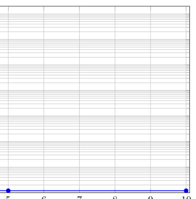
<figcaption class="paper-figure-caption"><b>Fig 1.</b> Fig. 1: Numerical values of khigh(p) with khigh(1) = 182.</figcaption>
</figure>
<figure class="paper-figure-card">
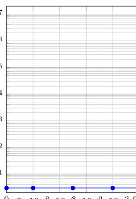
<figcaption class="paper-figure-caption"><b>Fig 2.</b> Fig. 2: Numerical values of klow(p). The growth near p = 1/4 is klow(p) ∼1/[12( 1</figcaption>
</figure>
</div>

<p><strong>Summary.</strong> This paper tackles the long-standing problem of additivity for minimum output $p$-Rényi entropy of quantum channels. By constructing explicit counterexamples using random projections, the authors prove nonadditivity holds for large ranges of the Rényi order parameter $p$, thereby significantly constraining the remaining unknown regime to $[1/4, 3/4]$. This advances the theoretical understanding of entanglement measures in quantum information theory.</p>
<p><strong>Why it may be interesting.</strong> This work provides deep theoretical insights into fundamental properties of quantum information measures, which are crucial for understanding channel capacity and entanglement quantification in open quantum systems.</p>
<details>
<summary>Detailed structure</summary>
<p><strong>Main problem.</strong> The central problem is determining the additivity of the minimum output $p$-Rényi entropy ($  ext{S}<em _min="\min">{\min}^p(\Phi)$) for quantum channels, which asks if $   ext{S}</em>}^p(\Phi \otimes\Psi) =     ext{S<em _min="\min">{\min}^p(\Phi) +     ext{S}</em>^p(\Psi)$.</p>
<p><strong>Main result.</strong> The authors prove that additivity fails for all Rényi orders $p$ in the ranges $[0, 1/4) \cup (3/4, \infty)$, significantly narrowing the unresolved interval to $[1/4, 3/4]$.</p>
<p><strong>Method.</strong> The proof employs sophisticated random-projection constructions and asymptotic analysis, utilizing specific witnesses (product–conjugate Bell-state witness for $p>3/4$ and transpose-complement rank-defect witness for $p<1/4$).</p>
<p><strong>Model / system.</strong> The study focuses on quantum channels ($\Phi$) acting on finite-dimensional systems, specifically those induced by Haar-distributed projections ($P_{AB,n}$) on a bipartite system.</p>
<p><strong>Key observables.</strong> Minimum output $p$-Rényi entropy ($    ext{S}_{\min}^p(\Phi)$), and the limiting one-channel output body $K_{k,t}$.</p>
<p><strong>Important parameters / regimes.</strong> The Rényi order parameter $p$, and the asymptotic rank ratio parameter $t \in (0, 1)$.</p>
<p><strong>Assumptions / limitations.</strong> The analysis relies on establishing the almost sure convergence of the actual output set $   ext{C}_n$ to a theoretical limit $K_{k,t}$ as system size $n 	o \infty$.</p>
<p><strong>Paper structure.</strong> The paper systematically analyzes the additivity failure by constructing explicit counterexamples for specific ranges of $p$, combining random-projection techniques with asymptotic entropy calculations.</p>
</details>
<details>
<summary>Abstract</summary>
<p>Additivity of minimum output entropies is a central problem in quantum information theory. Nonadditivity is known for every Rényi order $p>1$, at the von Neumann point $p=1$, and near $p=0$, while most of the interval $0<p<1$ has remained open. We prove that for every Rényi order $p$ satisfying either $p>3/4$ or $0\leq p<1/4$, there exist finite-dimensional projection-induced quantum channels such that additivity of the minimum output $p$-Rényi entropy fails. The proof combines two correlated random-projection constructions: a product-conjugate Bell-state witness for $p>3/4$, and a transpose-complement rank-defect witness for $p<1/4$. Thus the unresolved part of $0<p<1$ is reduced to $[1/4,3/4]$. Our estimates also improve the output dimension threshold for additivity violation of minimum output von Neumann entropy, first established in Belinschi, Collins and Nechida.</p>
</details>
<p><sub><a href="#top">↑ back to top</a></sub></p>

<p><a id="paper-2607.14214"></a></p>
<h3 id="exploring-the-shell-structure-of-trapped-superfluid-gases"><a href="http://arxiv.org/abs/2607.14214v1">Exploring the shell structure of trapped superfluid gases</a></h3>
<p><strong>Authors:</strong> G. Palkanoglou, R. Curry, S. Gandolfi<br>
<strong>Type:</strong> theory · <strong>Category:</strong> quantum gases · <strong>PDF:</strong> <a href="https://arxiv.org/pdf/2607.14214v1">https://arxiv.org/pdf/2607.14214v1</a><br>
<strong>Analysis basis:</strong> full PDF text, analyzed in chunks
<strong>Topic relevance:</strong> 🔥 <code>analog quantum simulation</code> <strong>4/5</strong></p>
<div class="figure-strip-hint">↔ Scroll figures horizontally</div>
<div class="paper-figures-scroll">
<figure class="paper-figure-card">
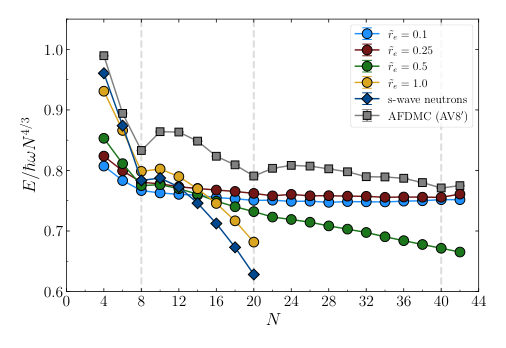
<figcaption class="paper-figure-caption"><b>Fig 1.</b> FIG. 2. The ground state energy (in units of ℏωN 4/3) approaching unitarity in a range of effective ranges ˜re = 0.1, 0.25, 0.5, 1 plotted with blue, red, green, and yellow cir- cles, respectively. We plot in dark blue diamonds the ground state energy of N atoms in a harmonic trap of ℏω = 10 MeV and a two-particle interaction tuned to reproduce the known neutron-neutron scattering length and effective range (re = 2.7 fm and a = −18.5 fm). We also include the AFDMC re- sults of Ref. [61] for neutron matter</figcaption>
</figure>
<figure class="paper-figure-card">
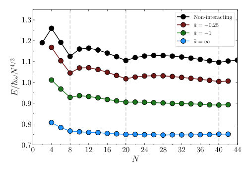
<figcaption class="paper-figure-caption"><b>Fig 2.</b> FIG. 1. The energy as a function of the number of particles for different scattering length and fixed effective range.</figcaption>
</figure>
<figure class="paper-figure-card">
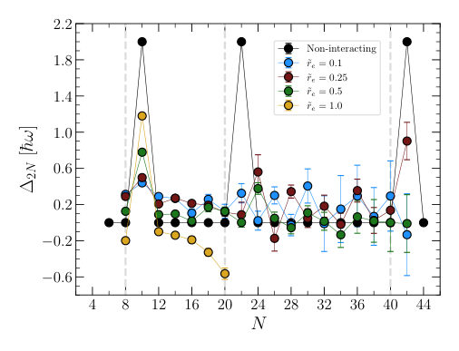
<figcaption class="paper-figure-caption"><b>Fig 3.</b> FIG. 4. The two particle shell gap (in units of ℏω) approach- ing unitarity in a range of effective ranges ˜re = 0.1, 0.25, 0.5, 1 plotted with blue, red, green, and yellow circles, respectively. Shell closure can be identified from pronounced peaks along the curve of fixed ˜re.</figcaption>
</figure>
<figure class="paper-figure-card">
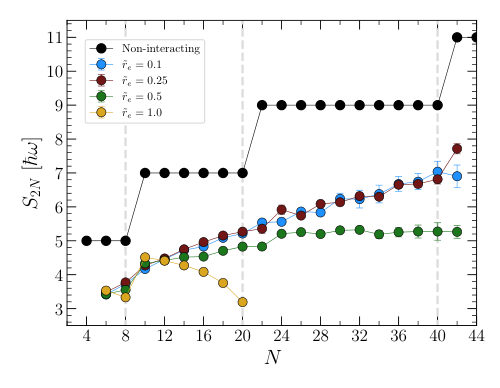
<figcaption class="paper-figure-caption"><b>Fig 4.</b> FIG. 3. Two particle separation energies (in units of ℏω) approaching unitarity in a range of effective ranges ˜re = 0.1, 0.25, 0.5, 1.0 plotted with blue, red, green, and yellow cir- cles, respectively. To compare, we also show the two-particle separation energies in the absence of two-particle interactions where shell-effects are most pronounced.</figcaption>
</figure>
<figure class="paper-figure-card">
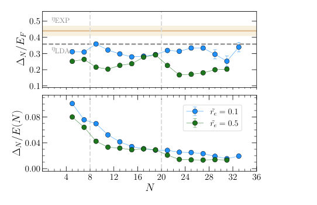
<figcaption class="paper-figure-caption"><b>Fig 5.</b> FIG. 6. The OES approaching unitarity, for ˜re = 0.1, 0.5 plotted in blue and green circles, scaled by the Fermi energy (top panel) and the ground state energy (bottom panel). The shell-closures are displayed with dashed vertical lines. The solid lines correspond to Bertsch’s parameter for the pairing gap as was measured in Ref. [64] and calculated for unitary Fermi gases in harmonic traps in Ref. [65] within LDA; see text for details.</figcaption>
</figure>
</div>

<p><strong>Summary.</strong> The paper uses Quantum Monte Carlo simulations to study trapped superfluid Fermi gases, examining how their shell structure changes as the interaction strength approaches unitarity. The key finding is that strong pairing correlations effectively wash out the characteristic shell gaps observed at weaker interactions. This provides a theoretical model relevant for understanding nuclear physics phenomena in exotic neutron-rich isotopes.</p>
<p><strong>Why it may be interesting.</strong> This work directly bridges cold atomic physics (ultracold Fermi gases) with fundamental nuclear structure questions (shell evolution in neutron-rich nuclei), providing a clean quantum simulation platform for understanding complex many-body phenomena like pairing and correlation effects.</p>
<details>
<summary>Detailed structure</summary>
<p><strong>Main problem.</strong> The study investigates how shell structure, a characteristic feature of quantum systems, evolves when superfluid Fermi gases are tuned towards the unitary limit.</p>
<p><strong>Main result.</strong> Shell effects are observed at finite interaction strengths but demonstrably vanish as the system approaches unitarity, suggesting strong pairing correlations suppress single-particle behavior.</p>
<p><strong>Method.</strong> The research employs Quantum Monte Carlo (QMC) methods, specifically Diffusion Monte Carlo (DMC), alongside Variational Monte Carlo (VMC) calculations to determine ground state energies and gaps.</p>
<p><strong>Model / system.</strong> The system modeled is a two-component Fermi gas confined in a harmonic trap. The interactions are characterized by tunable scattering length ($a$) and effective range ($r_e$), allowing exploration across different interaction regimes, including the unitary limit.</p>
<p><strong>Key observables.</strong> Two-particle separation energies ($S_{2N}$), two-particle shell gaps ($\Delta_{2N}$), and Odd-Even Staggering (OES) quantifying pairing correlations.</p>
<p><strong>Important parameters / regimes.</strong> Scattering length ($a$), effective range ($r_e$), particle number ($N$), and the unitary limit ($a 	o \infty$).</p>
<p><strong>Assumptions / limitations.</strong> The analysis uses a harmonic trap potential, which differs from the finite-depth potentials found in real nuclei; furthermore, discrepancies exist between calculated pairing gap scaling parameters ($\eta$) and experimental values.</p>
<p><strong>Figures summary.</strong> Figures illustrate how energy gaps and separation energies diminish towards unitarity as interaction parameters are varied, confirming the suppression of shell structure by strong correlations.</p>
<p><strong>Paper structure.</strong> The paper progresses by first establishing the theoretical framework using QMC for trapped Fermi gases. It then systematically analyzes observables like $S_{2N}$ and $\Delta_{2N}$ across varying interaction strengths to demonstrate the vanishing of shell effects at unitarity, linking this mechanism to pairing correlations.</p>
</details>
<details>
<summary>Abstract</summary>
<p>We provide quantum Monte Carlo calculations of a two-component Fermi system interacting with an attractive interaction confined in harmonic traps. We investigate the role of the interaction's scattering length and effective range and show its important role in modifying shell effects in the structure of these systems. We show that in the strongly interacting regime, where the scattering length is large, the dominant role to shell effects is due to the effective range. These conclusions are very relevant for nuclear physics, in particular for neutron-rich systems, and open the way to perform new atomic experiments that can help to explain the disappearance of shell-effects in nuclei.</p>
</details>
<p><sub><a href="#top">↑ back to top</a></sub></p>

<p><a id="paper-2607.14567"></a></p>
<h3 id="phase-coherence-control-of-a-programmable-high-tc-superconductor-created-by-light"><a href="http://arxiv.org/abs/2607.14567v1">Phase coherence control of a programmable high-Tc superconductor created by light</a></h3>
<p><strong>Authors:</strong> Viktoria Yursa, Igor Vaskivskyi, Anze Mraz, Damjan Svetin, Sergej Raznjevic, Vinko Srsan, Saso Sturm, Tomaz Mertelj, Mikhail Feigelman, Dragan Mihailovic<br>
<strong>Type:</strong> both · <strong>Category:</strong> strongly correlated electrons · <strong>PDF:</strong> <a href="https://arxiv.org/pdf/2607.14567v1">https://arxiv.org/pdf/2607.14567v1</a><br>
<strong>Analysis basis:</strong> full PDF text, analyzed in chunks
<strong>Topic relevance:</strong> <code>analog quantum simulation</code> <strong>3/5</strong> · <code>driven-dissipative phase transition</code> <strong>3/5</strong> · <code>non-equilibrium dynamics</code> <strong>3/5</strong> · <code>interference shaping light</code> <strong>2/5</strong> · <code>non-equilibrium universality</code> <strong>2/5</strong> · <code>quantum optics experiment</code> <strong>2/5</strong> · <code>Frenkel-Kontorova</code> <strong>1/5</strong> · <code>QC/QI experiment</code> <strong>1/5</strong> · <code>correlated / nonlocal dissipation</code> <strong>1/5</strong> · <code>correlated cavity matter</code> <strong>1/5</strong> · <code>exotic spin models in light-matter</code> <strong>1/5</strong> · <code>methods for driven-dissipative</code> <strong>1/5</strong> · <code>quantum measurements</code> <strong>1/5</strong></p>
<div class="figure-strip-hint">↔ Scroll figures horizontally</div>
<div class="paper-figures-scroll">
<figure class="paper-figure-card">
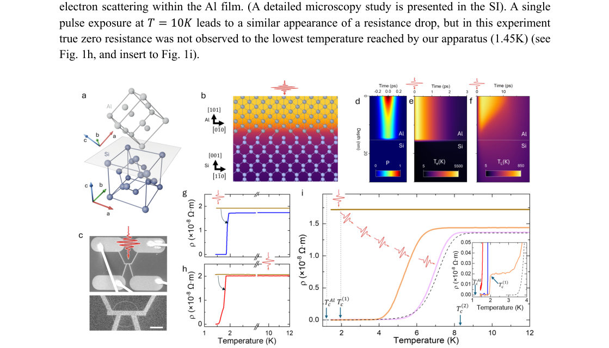
<figcaption class="paper-figure-caption"><b>Fig 1.</b> Figure 1. Switching to a superconducting state by light pulses. a) A schematic diagram of the Al and Si unit cell orientations at the heterostructure interface. b) a cross-section of the interface showing the lattice mismatch. The colour indicates the temperature on the same scale as f). c) The SEM images show the 4-probe device geometry with Al-wire-bonded Al contacts. The length of the bar is 20 𝜇m. d) The absorbed energy profile within the Al film on Si vs. time. e) and f) The calculated electron and lattice temperature profiles 𝑇!(𝑥, 𝑡) and 𝑇&quot;(𝑥, 𝑡) respectively as a function of time for maximum fluence. g) 𝜌(𝑇) measured before (brown line) and after (blue line) a single 200 fs light...</figcaption>
</figure>
<figure class="paper-figure-card">
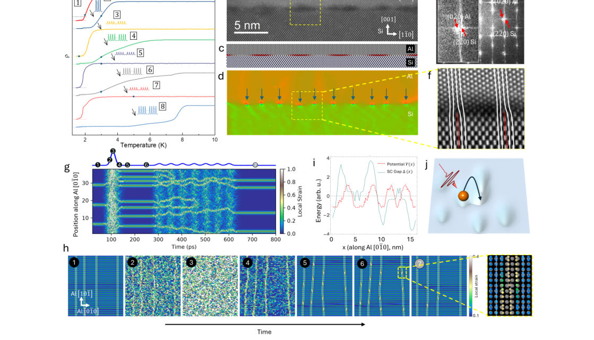
<figcaption class="paper-figure-caption"><b>Fig 2.</b> Figure 2. Manipulating superconductivity with light pulses. a) A progression of 𝜌(𝑇) curves measured after a series of light pulse sequences sequentially raise and lower 𝑇#. The dot indicates the temperature at which the light is applied and the pulse sequences are as indicated. The incident fluences are (in mJ/cm2): 1 : 50 (1 pulse), 2 : 50 (3 pulses), 3 : 10 (1000 pulses), 4 : 25 (1000 pulses), 5 : 10 (1000 pulses), 6 : 25 (1000 pulses), 7 : 10 (1000 pulses) and 8 : 30 (1000 pulses) respectively. Note than only ~3% of the incident light is absorbed. b) A cross-section of the Al-Si interface imaged by HAADF STEM shows a periodic structural modulation due to MDs along the Al [11011]...</figcaption>
</figure>
<figure class="paper-figure-card">
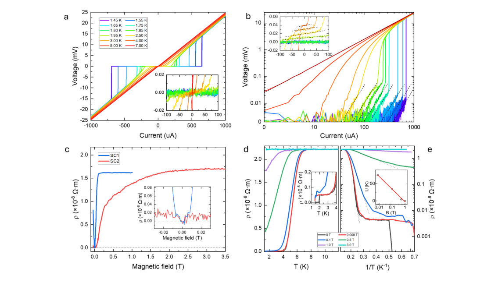
<figcaption class="paper-figure-caption"><b>Fig 3.</b> Figure 3. Properties of the light-induced superconducting state. a) V-I characteristics of the SC2 state at different temperatures. The insert shows the linear V-I behaviour at the origin. b) V-I curves of the SC2 state on a log-log plot show</figcaption>
</figure>
</div>

<p><strong>Summary.</strong> The research demonstrates the creation and precise control of a Light-Induced Superconducting (LiPS) state in an Al-Si heterojunction using femtosecond laser pulses. By manipulating the underlying structural superlattice formed by misfit dislocations, the authors can tune the superconducting critical temperature between $1.8 	ext{ K}$ and $8.5 	ext{ K}$. This work opens a pathway for engineering metastable, long-range phase coherent quantum states for future quantum devices.</p>
<p><strong>Why it may be interesting.</strong> This work bridges quantum optics (femtosecond pulsing) with condensed matter superconductivity in a highly tunable manner. The concept of using light to engineer metastable, phase-coherent superconducting states is directly relevant to designing novel quantum circuits and local gap tuning mechanisms.</p>
<details>
<summary>Detailed structure</summary>
<p><strong>Main problem.</strong> The central goal is to achieve direct, controllable evidence of a true zero-resistance superconducting state whose macroscopic quantum phase coherence can be created and controlled using light.</p>
<p><strong>Main result.</strong> The authors report creating and fully controlling a Light-Induced Superconducting (LiPS) state in an Al-Si heterojunction, demonstrating tunable critical temperatures ($1.8-8.5 	ext{ K}$) via tailored laser pulse sequences.</p>
<p><strong>Method.</strong> The study combines ultrafast optical excitation using femtosecond lasers with electrical transport measurements ($
ho(T)$, $V$-$I$, $
ho(B)$) and structural characterization using HRTEM.</p>
<p><strong>Model / system.</strong> The physical system is an aluminum-silicon heterojunction, where the superconductivity arises from light pulse control over a Moiré-like superlattice formed by misfit dislocations (MDs). The state exhibits features of Berezinski-Kosterlitz-Thouless transitions and 2D vortex dynamics.</p>
<p><strong>Key observables.</strong> Superconducting critical temperature ($T_c$), resistivity ($
ho(T)$), upper critical fields ($H_{c}$), superfluid stiffness ($\Theta$), and the structural periodicity of MDs.</p>
<p><strong>Important parameters / regimes.</strong> Femtosecond laser pulse duration (e.g., $220 	ext{ fs}$), superconducting temperatures ($1.8-8.5 	ext{ K}$), and applied magnetic fields up to $\sim 3 	ext{ T}$.</p>
<p><strong>Assumptions / limitations.</strong> The LiPS effect is attributed to light pulse control of the structural modulation (MD superlattice) at the interface, which imparts metastability.</p>
<p><strong>Figures summary.</strong> Figures illustrate the switching mechanism using pulses, show temperature profiles calculated from optical excitation, and detail superconducting properties like $V$-$I$ curves and magnetic field dependence for two distinct states ($  ext{SC}1$ and $ ext{SC}2$).</p>
<p><strong>Paper structure.</strong> The paper progresses by establishing the difficulty of observing light-controlled superconductivity, presenting the LiPS effect in Al-Si heterojunctions via laser pulses, characterizing two distinct superconducting states ($   ext{SC}1$ and $ ext{SC}2$) through transport measurements, and finally attributing the mechanism to structural control over misfit dislocations.</p>
</details>
<details>
<summary>Abstract</summary>
<p>The quest for superconductivity created by light extends for more than half a century, yet direct evidence of a true zero-resistance state -whose macroscopic quantum phase coherence is both created and controlled by light -- has remained elusive. Here we report for the first time on a complex but robust light-programmable superconducting (LiPS) state at an aluminium-silicon heterojunction that is created and fully controlled with femtosecond laser pulses. The superconducting critical temperatures -- ranging from 1.8-8.5 K, can be increased or erased at will by the application of tailored pulse sequences. At low temperatures the LiPS state shows features characteristic of a Berezinski-Kosterlitz-Thouless topological transition, but another distinct state appears at temperatures above 2 K, which shows clear signatures of quantum phase disorder. In the presence of a magnetic field we observe behaviour characteristic of vortex pinning and creep consistent with the 2-dimensional (2D) nature of the phase coherent system. The origin of the LiPS effect is attributed to light pulse control of the Moire-like superlattice of misfit dislocations (MDs) that naturally occur as a result of discommensurations between Al and Si lattices at the interface, and is clearly observable by high-resolution electron microscopy. We show how light pulses can be used to control the superlattice periodicity and highlight the appearance of topologically protected soliton-like kinks along the dislocation lines, important for imparting metastability to the system. The demonstration of LiPS opens a route to the design of metastable long-range phase coherent superconducting states, leading to light-engineering of quantum circuits, local gap tuning in quantum processors and novel devices utilizing switchable superconductivity.</p>
</details>
<p><sub><a href="#top">↑ back to top</a></sub></p>

<p><a id="paper-2607.14929"></a></p>
<h3 id="tomographic-flow-regime-vs-even-odd-effect-for-the-magnetotransport-in-the-corbino-geometry"><a href="http://arxiv.org/abs/2607.14929v1">Tomographic flow regime vs even-odd effect for the magnetotransport in the Corbino geometry</a></h3>
<p><strong>Authors:</strong> Grigory A. Starkov<br>
<strong>Type:</strong> theory · <strong>Category:</strong> statistical mechanics · <strong>PDF:</strong> <a href="https://arxiv.org/pdf/2607.14929v1">https://arxiv.org/pdf/2607.14929v1</a><br>
<strong>Analysis basis:</strong> full PDF text, analyzed in chunks
<strong>Topic relevance:</strong> <code>methods for driven-dissipative</code> <strong>3/5</strong> · <code>non-equilibrium dynamics</code> <strong>3/5</strong> · <code>driven-dissipative phase transition</code> <strong>2/5</strong> · <code>non-equilibrium universality</code> <strong>2/5</strong> · <code>Keldysh / 2PI / non-Gaussian methods</code> <strong>1/5</strong> · <code>Kondo &amp; dissipative impurity</code> <strong>1/5</strong> · <code>analog quantum simulation</code> <strong>1/5</strong> · <code>correlated / nonlocal dissipation</code> <strong>1/5</strong> · <code>spintronics-quantum-optics interface</code> <strong>1/5</strong></p>
<div class="figure-strip-hint">↔ Scroll figures horizontally</div>
<div class="paper-figures-scroll">
<figure class="paper-figure-card">
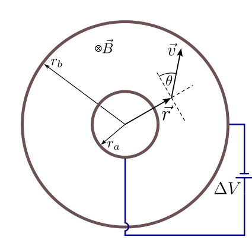
<figcaption class="paper-figure-caption"><b>Fig 1.</b> FIG. 1: Schematic representation of a Corbino disk.</figcaption>
</figure>
<figure class="paper-figure-card">
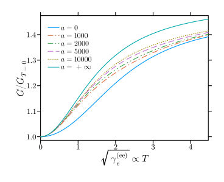
<figcaption class="paper-figure-caption"><b>Fig 2.</b> FIG. 2: Normalized total conductance G/GT =0 of the</figcaption>
</figure>
<figure class="paper-figure-card">
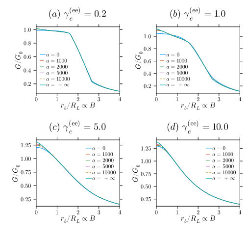
<figcaption class="paper-figure-caption"><b>Fig 3.</b> FIG. 3: Normalized total conductance G/G0 of the Corbino disk as a function of the inverse Larmor radius rb/RL ∝B for different values of the phenomenological parameter a and the even electron-electron scattering rate γ(ee) e . The case a = 0 corresponds to the Callaway’s dual relaxation time approx- imation, while the case a = +∞describes the model with an infinite number of the long-lived harmonics. See the main text for the definition of G0.</figcaption>
</figure>
<figure class="paper-figure-card">
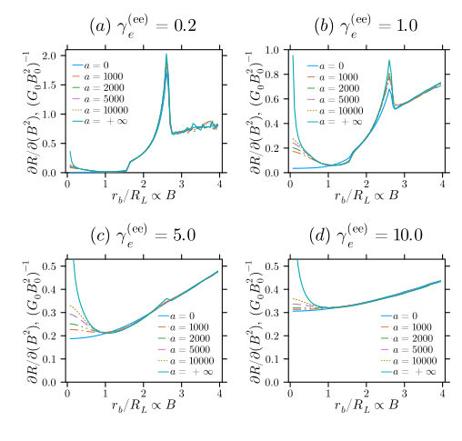
<figcaption class="paper-figure-caption"><b>Fig 4.</b> FIG. 4: Sensitivity ∂R/∂(B2) of the resistance R = 1/G to the square of the magnetic field as a function of the in- verse Larmor radius rb/RL ∝B for different values of the phenomenological parameter a and the even electron-electron scattering rate γ(ee) e . The case a = 0 corresponds to the Call- away’s dual relaxation time approximation, while the case a = +∞describes the model with an infinite number of the long-lived harmonics. See the main text for the definition of G0 and B0.</figcaption>
</figure>
<figure class="paper-figure-card">
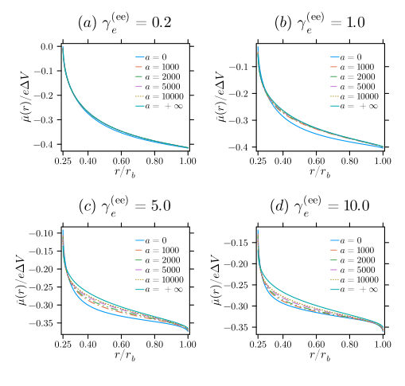
<figcaption class="paper-figure-caption"><b>Fig 5.</b> FIG. 5: Normalized electrochemical potential ¯µ(r)/e∆V = (eΦ(r) + δµ(r))/e∆V inside the Corbino disk as a function of the distance r to the disk center for different values of the phenomenological parameter a and the even electron-electron scattering rate γ(ee) e . The case a = 0 corresponds to the Call- away’s dual relaxation time approximation, while the case a = +∞describes the model with an infinite number of the long-lived harmonics.</figcaption>
</figure>
</div>

<p><strong>Summary.</strong> This theoretical work analyzes electron transport in a Corbino disk geometry by comparing two effects: the tomographic flow regime and the even-odd effect arising from electron-electron scattering. The authors predict that the even-odd effect should manifest as an enhancement in resistance sensitivity at low magnetic fields, providing a diagnostic tool for understanding quantum kinetic phenomena in 2D materials.</p>
<p><strong>Why it may be interesting.</strong> While focused on condensed matter transport, the detailed analysis of non-equilibrium dynamics using the Boltzmann equation and harmonic decomposition touches upon advanced kinetic theory relevant to open quantum systems far from equilibrium.</p>
<details>
<summary>Detailed structure</summary>
<p><strong>Main problem.</strong> The paper investigates magnetotransport in the Corbino geometry, comparing the influence of geometric constraints (tomographic flow regime) against intrinsic electron-electron scattering effects (even-odd effect).</p>
<p><strong>Main result.</strong> The authors predict a distinct signature of the even-odd effect—an enhancement of $\partial R/\partial(B^2)$ at small magnetic fields ($B 	o 0$)—which is most visible near the crossover from ballistic to tomographic flow.</p>
<p><strong>Method.</strong> Numerical analysis solving the linearized Boltzmann equation by expanding the distribution function in angular eigenmodes (Fourier series).</p>
<p><strong>Model / system.</strong> The study models two-dimensional electron systems confined to a Corbino disk geometry under an applied magnetic field, using the linearized Boltzmann equation to describe non-equilibrium electron flows.</p>
<p><strong>Key observables.</strong> Resistance sensitivity ($\partial R/\partial(B^2)$) at low fields, and dimensionless conductance ($G/G_0$).</p>
<p><strong>Important parameters / regimes.</strong> Temperature ($T$), magnetic field strength ($B$), ratio of scattering rates for even vs. odd harmonics ($\gamma_{e}^{ee}/\gamma_{o}^{ee}$), and the crossover parameter $v_F 	au_{	ext{even}} / r_b$.</p>
<p><strong>Assumptions / limitations.</strong> The analysis is performed in the linearized regime, assuming a degenerate electron gas ($T \ll E_F$), and relies on specific approximations for scattering interactions (e.g., $I_{	ext{ex}} \approx -I_{	ext{dir}}/2$).</p>
<p><strong>Figures summary.</strong> Figures show normalized conductance and resistance sensitivity ($\partial R/\partial(B^2)$) as a function of the ratio of Larmor radius to disk size ($r_b/R_L$), demonstrating parameter dependence.</p>
<p><strong>Paper structure.</strong> The paper develops theoretical frameworks by deriving scattering rates for odd and even harmonics, solving the linearized Boltzmann equation across different flow regimes (ballistic to tomographic), and finally predicting observable signatures in magnetotransport measurements.</p>
</details>
<details>
<summary>Abstract</summary>
<p>In two dimensions, the geometric constraints due to Pauli blocking and conservation laws lead to the even-odd effect exhibited by the electron-electron scattering lengths: electron-electron collisions are more efficient at relaxing the even angular harmonics of the distribution function than the odd ones. Inspired by a recent experiment on the magnetotransport in the Corbino disk geometry, we numerically analyze the electron flows in this geometry across all the regimes.   We predict a clear signature of the even-odd effect - enhancement of the resistance sensitivity $\partial R/\partial(B^2)$ at small magnetic fields $B\rightarrow 0$. This enhancement is most prominent at the crossover from the ballistic to the tomographic regime, and gradually disappears when the temperature is further increased. Our estimates suggest that in the temperature range of the experiment, the effect should be small. This implies that the attribution of the anomalous scaling of the kinematic viscosity, that was observed in the experiment, to the even-odd effect might need more careful consideration.   As a side note, we show how the method of characteristics can be extended to treat the long-lived odd harmonics, which allows one to recast the linearized Boltzmann equation as a system of integral ones.</p>
</details>
<p><sub><a href="#top">↑ back to top</a></sub></p>

<p><a id="paper-2607.14759"></a></p>
<h3 id="local-variance-based-calibration-of-programmable-photonic-interferometer-meshes"><a href="http://arxiv.org/abs/2607.14759v1">Local Variance-Based Calibration of Programmable Photonic Interferometer Meshes</a></h3>
<p><strong>Authors:</strong> Gökhan Elmas, Igor A. Litvin, Janis Nötzel<br>
<strong>Type:</strong> experiment · <strong>Category:</strong> other · <strong>PDF:</strong> <a href="https://arxiv.org/pdf/2607.14759v1">https://arxiv.org/pdf/2607.14759v1</a><br>
<strong>Analysis basis:</strong> full PDF text, analyzed in chunks
<strong>Topic relevance:</strong> <code>interference shaping light</code> <strong>3/5</strong> · <code>quantum optics experiment</code> <strong>3/5</strong> · <code>analog quantum simulation</code> <strong>2/5</strong> · <code>quantum measurements</code> <strong>2/5</strong> · <code>QC/QI experiment</code> <strong>1/5</strong> · <code>correlated cavity matter</code> <strong>1/5</strong> · <code>driven-dissipative phase transition</code> <strong>1/5</strong> · <code>methods for driven-dissipative</code> <strong>1/5</strong></p>
<div class="figure-strip-hint">↔ Scroll figures horizontally</div>
<div class="paper-figures-scroll">
<figure class="paper-figure-card">
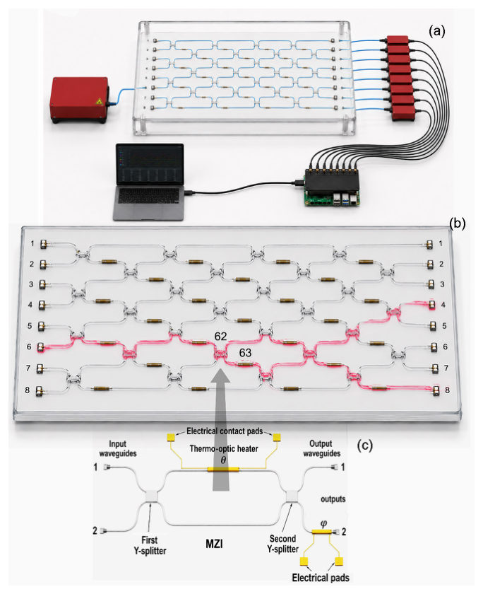
<figcaption class="paper-figure-caption"><b>Fig 1.</b> Figure 1: Experimental platform and programmable photonic processor. (a) Experimental arrangement used for intensity-based characterization of the eight-mode programmable photonic processor. Light from a continuous-wave laser is coupled into a selected input port through a polarization-maintaining fiber. The eight output ports are connected to individual photodetectors, whose electrical signals are digitized by an eight-channel analog-to-digital conversion stage and recorded on a computer. Blue lines denote optical fiber connections, whereas black lines denote electrical connections. (b) Rendered layout of the 8×8 interferometric mesh, showing the arrangement of tunable Mach–Zehnder...</figcaption>
</figure>
<figure class="paper-figure-card">
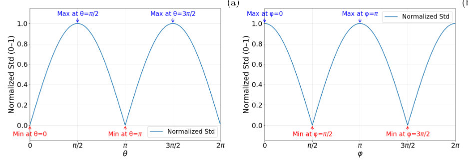
<figcaption class="paper-figure-caption"><b>Fig 2.</b> Figure 2: Theoretical variance-based calibration signatures. (a) Normalized standard deviation of the monitored MZI output intensity as a function of the internal phase θ, showing the characteristic | sin θ| dependence. The minima at θ = 0 and θ = π identify the bar and cross operating points, respectively. (b) Normalized standard deviation of the phase-shifter calibration signal as a function of the phase-shifter phase ϕ under balanced-interference conditions, showing the characteristic | cos ϕ| dependence. The minima at ϕ = π/2 and ϕ = 3π/2 identify the quadrature operating points.</figcaption>
</figure>
<figure class="paper-figure-card">
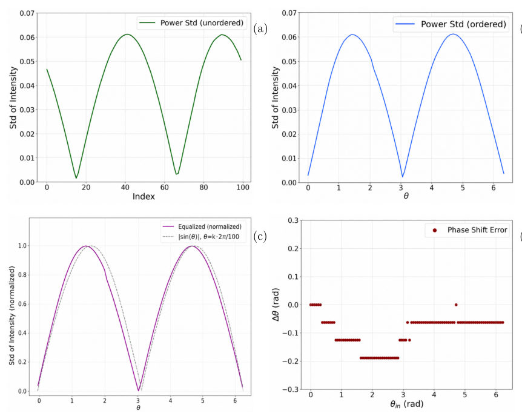
<figcaption class="paper-figure-caption"><b>Fig 3.</b> Figure 3: Experimental variance-based MZI calibration for MZI62. (a) Raw unnormalized output variance as a function of heater phase θ (unordered). (b) Same data after ordering. (c) Ordered and normalized variance following the theoretical | sin θ| dependence. (d) Extracted residual phase error ∆θ after calibration.</figcaption>
</figure>
<figure class="paper-figure-card">
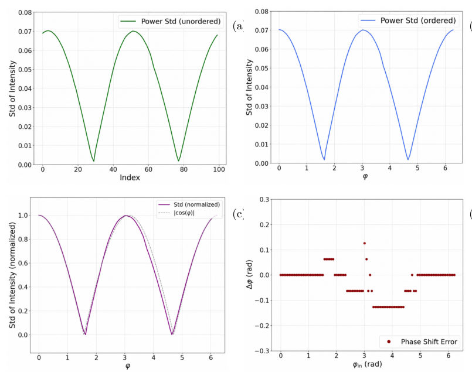
<figcaption class="paper-figure-caption"><b>Fig 4.</b> Figure 4: Experimental variance-based PS calibration for PS63. (a) Raw unnormalized output variance as a function of input phase ϕ (unordered). (b) Same data after ordering. (c) Ordered and normalized variance exhibiting the expected | cos ϕ| dependence with minima at quadrature. (d) Extracted residual phase error ∆θ after calibration.</figcaption>
</figure>
<figure class="paper-figure-card">
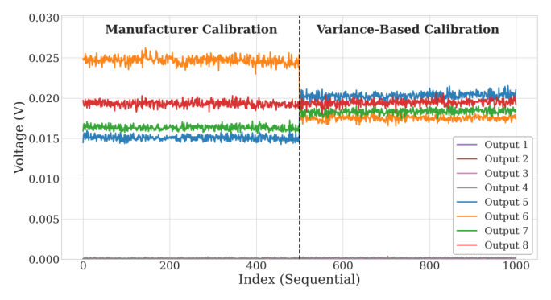
<figcaption class="paper-figure-caption"><b>Fig 5.</b> Figure 5: System-level comparison between the manufacturer-provided factory calibration and the proposed variance-based calibration for an implemented 4×4 Hadamard transformation. The variance-based calibration yields more uniform output levels and reduced temporal fluctuations across the measured output channels.</figcaption>
</figure>
</div>

<p><strong>Summary.</strong> The paper presents a novel local variance-based method to self-calibrate programmable photonic interferometer meshes. By measuring the statistical variance of output intensity under controlled phase perturbations, the authors can accurately determine operating points for MZIs and phase shifters without needing complex node isolation or global training fields. This makes the technique highly practical for building scalable, self-stabilizing photonic processors.</p>
<p><strong>Why it may be interesting.</strong> This work provides a highly practical, low-overhead calibration primitive for scalable integrated photonics, which is crucial for realizing complex quantum optical circuits and photonic quantum computing architectures.</p>
<details>
<summary>Detailed structure</summary>
<p><strong>Main problem.</strong> Accurately calibrating programmable photonic interferometer meshes is difficult using conventional methods due to requirements like node isolation or complex characterization procedures, especially in large, thermally tuned systems.</p>
<p><strong>Main result.</strong> The authors introduce and validate a local variance-based self-calibration method that uses only intensity measurements to determine operating points for MZIs and phase shifters without requiring dedicated routing paths or orthogonal training states.</p>
<p><strong>Method.</strong> Calibration is achieved by applying controlled phase perturbations and identifying the calibration point from the minima of the measured output-power variance, which follows characteristic $|\sin 	heta|$ (for MZIs) or $|\cos \phi|$ (for PSs) dependencies.</p>
<p><strong>Model / system.</strong> The work focuses on programmable photonic interferometer meshes implemented on silicon nitride platforms, featuring Mach-Zehnder Interferometers (MZIs) and phase shifters arranged in large arrays (e.g., $8 	imes 8$ processors).</p>
<p><strong>Key observables.</strong> Output-intensity variance ($   ext{Var}(P_{out})$), which exhibits characteristic $|\sin	heta|$ or $|\cos\phi|$ minima at operating points.</p>
<p><strong>Important parameters / regimes.</strong> The method is robust to random phase settings and requires only a small, finite ensemble of measurements per calibration step.</p>
<p><strong>Assumptions / limitations.</strong> It assumes that local input fields are non-zero and that the variance observable can be used locally without needing global knowledge or perfect isolation between elements.</p>
<p><strong>Figures summary.</strong> Figures illustrate the experimental setup on an $8 	imes 8$ processor, showing theoretical signatures of the variance dependence for both MZIs ($|\sin	heta|$) and PSs ($|\cos\phi|$).</p>
<p><strong>Paper structure.</strong> The paper first establishes the limitations of existing calibration techniques. It then derives the statistical relationship between output power variance and operating parameters ($\sigma(	heta) \propto |\sin 	heta|$, $\sigma(\phi) \propto |\cos \phi|$). Finally, it validates this method experimentally on a large processor using an automated two-stage procedure.</p>
</details>
<details>
<summary>Abstract</summary>
<p>Programmable photonic interferometer meshes enable reconfigurable linear optical transformations, but their performance depends critically on accurate calibration of Mach-Zehnder interferometers and phase shifters. Conventional methods often require node isolation, dedicated routing paths, orthogonal training states, reference channels, or prior phase-voltage characterization, which become increasingly difficult in large thermally tuned meshes.   We introduce a local variance-based self-calibration method using intensity-only measurements. Controlled phase perturbations are applied, and calibration points are identified from minima of the measured output-power variance. For Mach-Zehnder interferometers, the variance follows a characteristic |sin(theta)| dependence, allowing bar and cross operating points to be found without conventional node isolation. For phase shifters, balanced interference produces a complementary |cos(phi)| variance signature, enabling quadrature calibration through the same statistical principle.   We validate the method experimentally on an 8 x 8 silicon nitride programmable photonic processor using a fully automated two-stage procedure. Starting from random phase settings, all Mach-Zehnder interferometers are calibrated first, followed by phase-shifter calibration under balanced-interference conditions. As a system-level test, we implement an embedded 4 x 4 Hadamard transformation on the 8 x 8 processor using a Clements decomposition.   These results establish local output variance as a simple calibration observable for programmable photonic meshes. The method is compatible with discrete random phase ensembles and requires neither conventional node isolation nor orthogonal training fields, making it a practical calibration primitive for scalable self-stabilizing photonic processors.</p>
</details>
<p><sub><a href="#top">↑ back to top</a></sub></p>

<p><a id="paper-2607.15160"></a></p>
<h3 id="parameter-shift-rules-for-gradients-in-boson-sampling-experiments"><a href="http://arxiv.org/abs/2607.15160v1">Parameter-Shift Rules for Gradients in Boson Sampling Experiments</a></h3>
<p><strong>Authors:</strong> Marius Trudeau, Pierre-Emmanuel Emeriau, Nicolás Quesada<br>
<strong>Type:</strong> theory · <strong>Category:</strong> quantum information and computing · <strong>PDF:</strong> <a href="https://arxiv.org/pdf/2607.15160v1">https://arxiv.org/pdf/2607.15160v1</a><br>
<strong>Analysis basis:</strong> full PDF text, analyzed in chunks
<strong>Topic relevance:</strong> <code>methods for driven-dissipative</code> <strong>3/5</strong> · <code>quantum optics experiment</code> <strong>3/5</strong> · <code>QC/QI experiment</code> <strong>2/5</strong> · <code>quantum measurements</code> <strong>2/5</strong> · <code>Keldysh / 2PI / non-Gaussian methods</code> <strong>1/5</strong> · <code>analog quantum simulation</code> <strong>1/5</strong> · <code>correlated / nonlocal dissipation</code> <strong>1/5</strong> · <code>driven-dissipative phase transition</code> <strong>1/5</strong></p>
<div class="figure-strip-hint">↔ Scroll figures horizontally</div>
<div class="paper-figures-scroll">
<figure class="paper-figure-card">
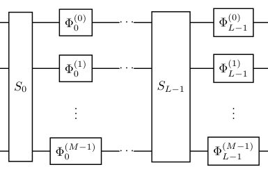
<figcaption class="paper-figure-caption"><b>Fig 1.</b> FIG. 1. A lossy interferometer decomposed as a sequence of L unparameterized sub-unitary blocks and parametrized diagonal phase-shift matrices.</figcaption>
</figure>
<figure class="paper-figure-card">
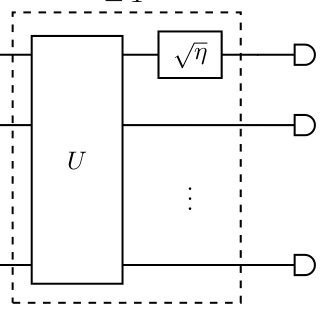
<figcaption class="paper-figure-caption"><b>Fig 2.</b> FIG. 2. Example of a sub-unitary matrix with diagonalizable loss after the unitary.</figcaption>
</figure>
<figure class="paper-figure-card">
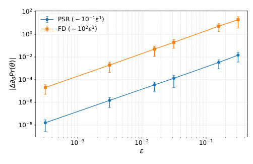
<figcaption class="paper-figure-caption"><b>Fig 3.</b> FIG. 3. Absolute derivative error as a function of the phase error amplitude ε for FD with δ = 10−4 (orange) and the PSR (blue). Results are shown for a four-mode random optical component with input state ⃗i = (1, 1, 1, 1) and output state ⃗j = (2, 0, 2, 0) using the SLOS model [57]. Each data point represents the mean over 100 independent trials, with error bars indicating one standard deviation.</figcaption>
</figure>
<figure class="paper-figure-card">
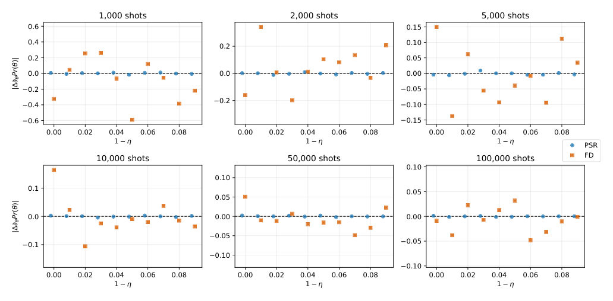
<figcaption class="paper-figure-caption"><b>Fig 4.</b> FIG. 4. Derivative estimation error as a function of loss for FD with δ = 10−4 (orange) and the PSR (blue). Results are shown for a four-mode random optical component with input state ⃗i = (1, 1, 1, 1) and output state ⃗j = (2, 0, 2, 0), using Perceval’s uniform noise model. Each data point corresponds to the mean derivative error over 10 independent trials.</figcaption>
</figure>
<figure class="paper-figure-card">
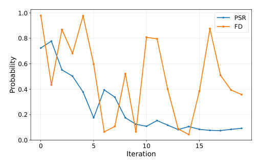
<figcaption class="paper-figure-caption"><b>Fig 5.</b> FIG. 5. Cost function, corresponding to the coincidence prob- ability Pr(⃗j = (1, 1)), as a function of gradient descent it- erations on Quandela’s Belenos QPU. The experiment was performed for two modes with initial state ⃗i = (1, 1) and a uniformly chosen initial parameter angle and a specified shot count of 1000. The optimization was performed using a fixed step size of 0.1 for 25 iterations for FD with δ = 10−4 (or- ange) and the PSR (blue).</figcaption>
</figure>
</div>

<p><strong>Summary.</strong> This paper develops advanced Parameter-Shift Rules (PSRs) to accurately calculate gradients for boson sampling experiments operating with photon loss in integrated photonics. It provides a robust mathematical framework, showing when and how these rules can be applied to both Fock and Gaussian boson sampling regimes. The results are validated by comparing the method's performance against finite difference techniques on real hardware.</p>
<p><strong>Why it may be interesting.</strong> This work directly addresses the practical challenges of implementing quantum algorithms on noisy photonic hardware by providing mathematically rigorous gradient estimation techniques that outperform simple finite differencing.</p>
<details>
<summary>Detailed structure</summary>
<p><strong>Main problem.</strong> The primary goal is deriving robust parameter-shift rules (PSRs) to compute gradients of transition probabilities in photonic boson sampling experiments that incorporate photon loss.</p>
<p><strong>Main result.</strong> PSRs are derived for Fock boson sampling with a lossy model, showing limitations when generalizing to Gaussian boson sampling unless specific factorization conditions on the transmission matrix are met.</p>
<p><strong>Method.</strong> The authors derive PSRs by relating derivatives of observables to linear combinations of shifted function evaluations, comparing this method's performance against standard finite difference techniques.</p>
<p><strong>Model / system.</strong> The system involves bosonic modes in photonic quantum experiments, where lossy evolution is modeled by embedding the process into a larger unitary transformation acting on system and environment modes. The core mathematical tools are ladder operators and Fock/coherent states.</p>
<p><strong>Key observables.</strong> Fock boson sampling transition probabilities, measurement outcome probabilities, average photon number, and photon-number correlators.</p>
<p><strong>Important parameters / regimes.</strong> The order of the parameter shift rule ($n$), the total number of photons detected, and the loss parameters embedded in the transmission matrix $T$.</p>
<p><strong>Assumptions / limitations.</strong> The derivation assumes that cross-talk between modes is negligible, allowing phase-shift loss to commute with the phase shift. The method also relies on the observable being representable as a finite Fourier series.</p>
<p><strong>Figures summary.</strong> Not specified in the notes; however, the text refers to figures illustrating the interferometer structure and potentially comparing PSR performance vs. FD.</p>
<p><strong>Paper structure.</strong> The paper first establishes the physical model of lossy evolution using an enlarged unitary transformation $W$. It then develops the mathematical framework for Parameter-Shift Rules (PSRs) applicable to this lossy setting, deriving specific rules for Fock boson sampling and analyzing the conditions under which Gaussian boson sampling can also be addressed.</p>
</details>
<details>
<summary>Abstract</summary>
<p>Using a robust photon loss model for photonic quantum experiments, we derive $n-$th order parameter-shift rules for computing gradients of Fock boson sampling transition probabilities where $n$ photons are sent into a lossy interferometer. We also show that in general it is not possible to generalize this gradient recipe to the case of Gaussian boson sampling. Only in the specific case where the transmission matrix of the interferometer can be factorized as a diagonal loss matrix premultiplied by a pure unitary it is possible to obtain parameter-shift rules with a finite order given by twice the total number of photons detected. We demonstrate the efficacy of the proposed method by comparing its performance against finite differences on real hardware.</p>
</details>
<p><sub><a href="#top">↑ back to top</a></sub></p>

<p><a id="paper-2607.15043"></a></p>
<h3 id="derivation-and-application-of-a-general-scaling-relation-between-the-dc-and-asymptotic-high-frequency-optical-hall-responses"><a href="http://arxiv.org/abs/2607.15043v1">Derivation and application of a general scaling relation between the dc and asymptotic high-frequency optical Hall responses</a></h3>
<p><strong>Authors:</strong> E. Abelev, R. Romero, N. P. Armitage<br>
<strong>Type:</strong> both · <strong>Category:</strong> strongly correlated electrons · <strong>PDF:</strong> <a href="https://arxiv.org/pdf/2607.15043v1">https://arxiv.org/pdf/2607.15043v1</a><br>
<strong>Analysis basis:</strong> full PDF text, analyzed in chunks
<strong>Topic relevance:</strong> <code>exotic spin models in light-matter</code> <strong>3/5</strong> · <code>spintronics-quantum-optics interface</code> <strong>3/5</strong> · <code>non-equilibrium dynamics</code> <strong>2/5</strong> · <code>non-equilibrium universality</code> <strong>2/5</strong> · <code>Keldysh / 2PI / non-Gaussian methods</code> <strong>1/5</strong> · <code>driven-dissipative phase transition</code> <strong>1/5</strong> · <code>methods for driven-dissipative</code> <strong>1/5</strong></p>
<div class="figure-strip-hint">↔ Scroll figures horizontally</div>
<div class="paper-figures-scroll">
<figure class="paper-figure-card">
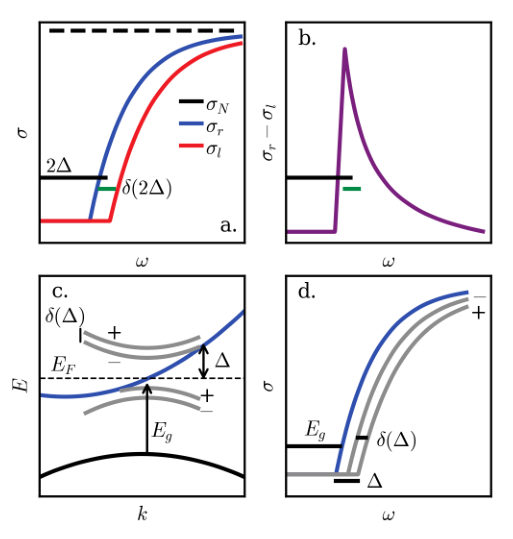
<figcaption class="paper-figure-caption"><b>Fig 1.</b> FIG. 1. a) In the dirty limit TRSB superconductor case the real part of the conductivity may manifest a different super- conducting gap for the right and left absorptive channels. The energy scales, 2∆and δ(2∆) are denoted in black and green respectively. b) The difference of the conductivities shown in a). When this quantity is finite it is of order the normal state conductivity σN, but falls off quickly with increasing frequency. c) Schematic of the band structure for TRSB SC in a multiband system. The grey bands could be spin-split Bogoliubon branches which modify the optical conductivity as shown in. d) The optical conductivity for this case.</figcaption>
</figure>
<figure class="paper-figure-card">
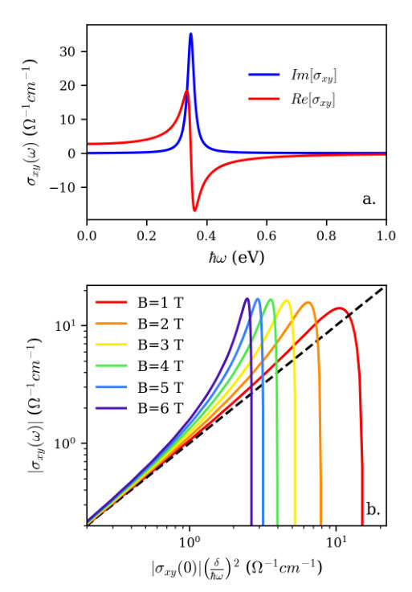
<figcaption class="paper-figure-caption"><b>Fig 2.</b> FIG. 2. Hall conductivity of cyclotron resonance in Drude model. a) Real and imaginary parts of Hall conductivity spec- trum at 6 T. b) Convergence of real part of Hall conductivity from the Drude model with Eq. 11. γ = 2 × 1013 s−1, m = 2 × 10−3 me, n = 1020 electrons/cm3. The data approaches the unity line at large ω (left side of the plot) in accord with Eq. 11.</figcaption>
</figure>
<figure class="paper-figure-card">
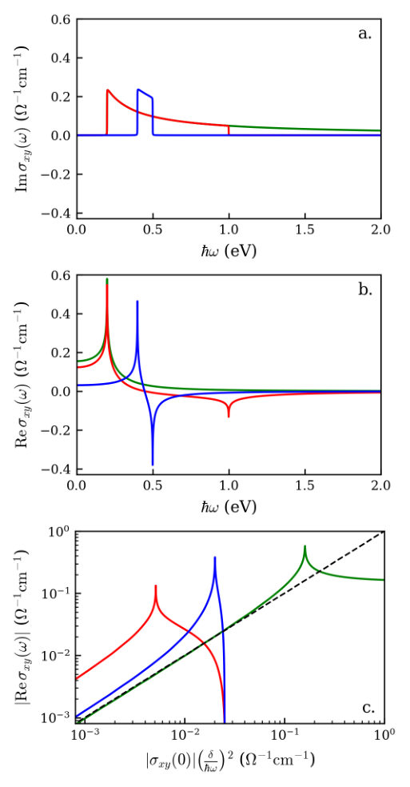
<figcaption class="paper-figure-caption"><b>Fig 3.</b> FIG. 3. Hall conductivity of truncated and untruncated Dirac cone models. a) Real, b) imaginary parts of conductivity. c) Convergence of real part of Hall conductivity from the Dirac model and Eq. 8. Green: untruncated, m = 0.1 eV, µ = 0.1 eV . Red: truncated, m = 0.1 eV, µ1 = 0.1 eV, µ2 = 0.5 eV . Blue: truncated, m = 0.2 eV, µ1 = 0.2 eV, µ2 = 0.25 eV</figcaption>
</figure>
<figure class="paper-figure-card">
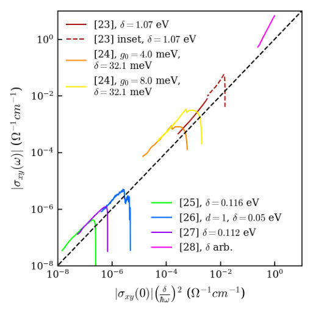
<figcaption class="paper-figure-caption"><b>Fig 4.</b> FIG. 4. Real part of Hall conductivity predicted theoretically in various superconductors [23–28], plotted against Eq. 8.</figcaption>
</figure>
<figure class="paper-figure-card">
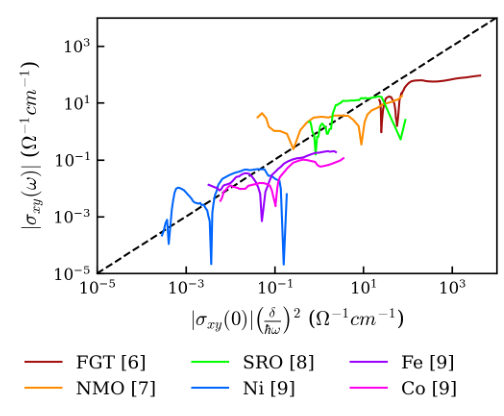
<figcaption class="paper-figure-caption"><b>Fig 5.</b> FIG. 5. Real part of Hall conductivity experimentally mea- sured in various TRSB ferromagnets [6–9]. FGT: Fe3GeTe2, NMO: Nd2Mo2O7, SRO: SrRuO3.</figcaption>
</figure>
</div>

<p><strong>Summary.</strong> This work establishes a general scaling relation linking the DC Hall conductivity to the high-frequency optical Hall response in time-reversal symmetry breaking systems. By applying this relationship, the authors make a quantitative prediction for the anomalous Hall effect in cuprate superconductors based on their measurable Kerr rotation signals.</p>
<p><strong>Why it may be interesting.</strong> It provides a powerful, universal diagnostic tool—a scaling law—to connect disparate measurements (DC vs. optical) in complex quantum materials exhibiting broken symmetries, which is relevant for understanding exotic electronic states.</p>
<details>
<summary>Detailed structure</summary>
<p><strong>Main problem.</strong> The paper derives a general scaling relation connecting the low-frequency (quasi-dc) Hall conductivity to the asymptotic high-frequency optical Hall response in Time-Reversal Symmetry Breaking (TRSB) materials.</p>
<p><strong>Main result.</strong> A scaling relation, $  ext{Re}|\sigma_{xy}(\omega)| \propto |\sigma_{xy}(0)| (\delta/\omega)^2$, is derived and shown to hold for several models. This is used to predict a measurable anomalous Hall effect in cuprate superconductors based on their Kerr effect measurements.</p>
<p><strong>Method.</strong> The derivation relies on the Kramers-Kronig relations, connecting $\sigma_{1,xy}(\omega 	o 0)$ to $\sigma_{1,xy}(\omega \gg 	ext{gap})$ by analyzing the frequency dependence of the optical conductivity in different limits.</p>
<p><strong>Model / system.</strong> The study applies to TRSB states like ferromagnets and superconductors (e.g., cuprates), modeled using concepts from cyclotron resonance, Dirac continua, and superconducting gap structures.</p>
<p><strong>Key observables.</strong> Hall conductivity ($\sigma_{xy}$), Kerr effect signal ($ heta_K$), quasi-dc Hall conductivity ($\sigma_{1,xy}(\omega   o 0)$), and high-frequency optical response ($\sigma_{1,xy}(\omega \gg     ext{gap})$).</p>
<p><strong>Important parameters / regimes.</strong> Characteristic energy scales like the superconducting gap ($2\Delta$) or cyclotron frequency ($\omega_c$); the ratio $\delta/\omega$.</p>
<p><strong>Assumptions / limitations.</strong> The derivation assumes specific functional forms for conductivity in high and low-frequency limits, and the application to cuprates relies on relating the Kerr effect magnitude to the DC Hall response.</p>
<p><strong>Figures summary.</strong> Figures illustrate the derivation using dirty limit TRSB superconductors (Fig. 1) and compare $\sigma_{1,xy}$ and $\sigma_{2,xy}$ for cyclotron resonance in Drude/Dirac models (Figs. 2 &amp; 3).</p>
<p><strong>Paper structure.</strong> The paper proceeds by deriving the general scaling relation using KK relations, testing it against idealized models (cyclotron resonance), validating it with theoretical TRSB models, and finally applying the derived relationship to predict a specific measurable quantity in cuprate superconductors.</p>
</details>
<details>
<summary>Abstract</summary>
<p>Based on the Kramers-Krong relations, we derive and apply a quite general expression that that relates the low frequency quasi-dc Hall conductivity to the asymptotic high frequency optical Hall response (and its manifestations in Kerr and Faraday effects) for time-reversal symmetry breaking (TRSB) states of matter like ferromagnets and time-reversal symmetry breaking superconductors as well as metals in magnetic field. Parametric plots shows this relation is obeyed exactly for the trivial single-mode case of sharp cyclotron resonance, and approximately for theoretical models for ferromagnets and TRSB superconductors. We also apply it to the experimental data from a variety of ferromagnetic systems and show reasonable agreement there as well. We use the relation to predict, from the size of the spontaneous Kerr effect at the pseudogap temperature of the cuprate superconductors that cuprates should exhibit an anomalous Hall effect of approximately 0.1 Ohm$^{-1}\cdot$cm$^{-1}$. This is a small value, but one within experimental reach and we encourage the search for it. Although not explicitly quantum geometric, our treatment has some similarities to efforts to set bounds on physical quantities based on quantum geometric relations and limited physical information.</p>
</details>
<p><sub><a href="#top">↑ back to top</a></sub></p>

<p><a id="paper-2607.14549"></a></p>
<h3 id="lyapunov-spectrum-scaling-transition-for-quasiperiodic-nonlinear-unitaries"><a href="http://arxiv.org/abs/2607.14549v1">Lyapunov spectrum scaling transition for quasiperiodic nonlinear unitaries</a></h3>
<p><strong>Authors:</strong> Xiaodong Zhang, Barbara Dietz, Sergej Flach<br>
<strong>Type:</strong> theory · <strong>Category:</strong> disordered systems and neural networks · <strong>PDF:</strong> <a href="https://arxiv.org/pdf/2607.14549v1">https://arxiv.org/pdf/2607.14549v1</a><br>
<strong>Analysis basis:</strong> full PDF text, analyzed in chunks
<strong>Topic relevance:</strong> <code>non-equilibrium dynamics</code> <strong>3/5</strong> · <code>Frenkel-Kontorova</code> <strong>2/5</strong> · <code>analog quantum simulation</code> <strong>2/5</strong> · <code>Kondo &amp; dissipative impurity</code> <strong>1/5</strong> · <code>driven-dissipative phase transition</code> <strong>1/5</strong> · <code>entanglement &amp; information structure</code> <strong>1/5</strong> · <code>methods for driven-dissipative</code> <strong>1/5</strong> · <code>non-equilibrium universality</code> <strong>1/5</strong> · <code>scars &amp; prethermalization</code> <strong>1/5</strong></p>
<div class="figure-strip-hint">↔ Scroll figures horizontally</div>
<div class="paper-figures-scroll">
<figure class="paper-figure-card">
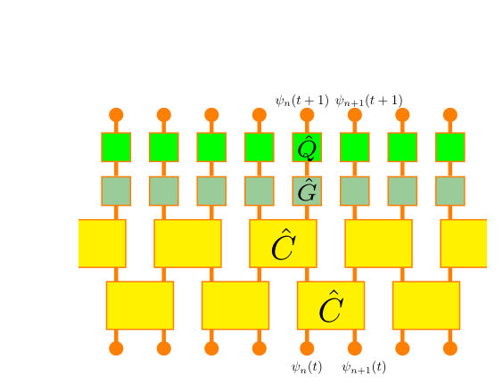
<figcaption class="paper-figure-caption"><b>Fig 1.</b> FIG. 1. A schematic representation of the unitary circuit map. The evolution proceeds from bottom to top and com- prises alternating large yellow blocks, small dark green blocks, and light green blocks. These represent unitary matrices ˆC, which are parameterized by the angle θ, local nonlinear trans- formation maps ˆG (dark green), governed by the nonlinearity strength g, and local quasiperiodic potential maps ˆQ (light green), characterized by site-dependent phases ϵn. The states ψn(t) and ψn+1(t) evolve to ψn(t + 1) and ψn+1(t + 1), re- spectively, through successive applications of these transfor- mations. Each complete time step consists of four substeps.</figcaption>
</figure>
<figure class="paper-figure-card">
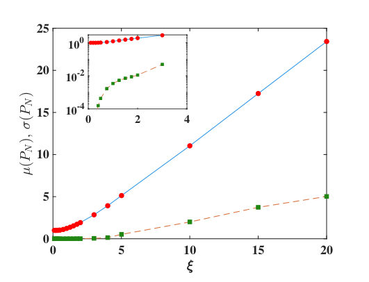
<figcaption class="paper-figure-caption"><b>Fig 2.</b> FIG. 2. Participation number PN as a function of the localization length ξ at g = 0. The red circles show the mean value µ(PN), and the green squares exhibit the standard deviation σ(PN). The inset shows a zoomed-in view of the small-ξ regime, where the y axis is plotted on a logarithmic scale. The localization length is sampled at ξ = 0.1, 0.2, 0.3, 0.4, 0.5, 0.75, 1, 1.25, 1.5, 1.75, 2, 3, 4, 5, 10, 15, 20. The system consists of N = 100 unit cells.</figcaption>
</figure>
<figure class="paper-figure-card">
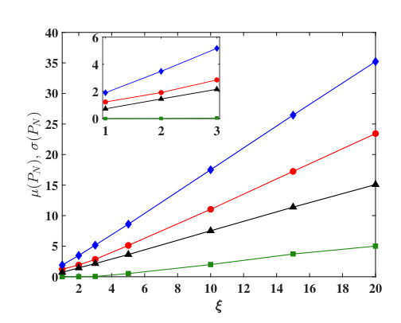
<figcaption class="paper-figure-caption"><b>Fig 3.</b> FIG. 3. Participation number PN as a function of the lo- calization length ξ for quasiperiodic and disorder systems for the linear case, g = 0. The quasiperiodic data are shown as red circles for the mean value µ(PN) and green squares for the standard deviation σ(PN), following the notation in Fig. 2. The disorder results are indicated by blue diamonds for µ(PN) and black triangles for σ(PN). The inset displays a magnified view in the small-ξ regime (ξ = 1, 2, 3). All data are obtained for a system of size N = 100.</figcaption>
</figure>
<figure class="paper-figure-card">
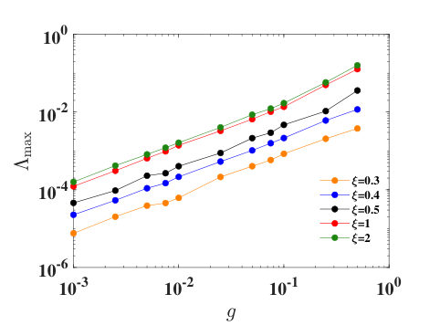
<figcaption class="paper-figure-caption"><b>Fig 4.</b> FIG. 4. The largest Lyapunov exponent Λmax as a function of the nonlinearity strength g for the quasiperiodic case. Different curves correspond to various localization lengths ξ, as indicated in the legend. Data points are sampled for g = 0.001, 0.0025, 0.005, 0.0075, 0.01, 0.025, 0.05, 0.075, 0.1, 0.25, 0.5. The scaling behavior of Λmax varies systematically with ξ. The system size is N = 100, and the evolution time is 108.</figcaption>
</figure>
<figure class="paper-figure-card">

<figcaption class="paper-figure-caption"><b>Fig 5.</b> Figure 4 shows for the quasiperiodic case the depen- dence of the largest Lyapunov exponent Λmax on the non- linearity strength g for various localization lengths ξ, as indicated in the legend. The data points correspond to different values of g, spanning three orders of magnitude. For all values of ξ, Λmax decreases as expected monoton- ically with decreasing g, indicating a systematic suppres- sion of chaos as nonlinearity weakens. Figure 5 presents the rescaled Lyapunov spectrum ¯Λ as a function of the rescaled index ρ for a fixed localization length ξ = 1. Panel (a) corresponds to the disordered case, while panel (b) illustrates the quasiperiodic poten- tial case. Different curves...</figcaption>
</figure>
</div>

<p><strong>Summary.</strong> This work analyzes how nonlinearity affects the transition between long-range and short-range scaling of Lyapunov spectra in quasiperiodically driven unitary maps. By comparing these results to random disorder, the authors find that quasiperiodic potentials exhibit unexpected behavior, suggesting that long-range correlations persist even when interactions break integrability.</p>
<p><strong>Why it may be interesting.</strong> The investigation bridges concepts from quantum chaos (Lyapunov exponents), localization theory (Anderson/quasiperiodic models), and nonlinear dynamics, which are central to understanding energy transport and thermalization in complex quantum systems relevant to AMO physics.</p>
<details>
<summary>Detailed structure</summary>
<p><strong>Main problem.</strong> The study investigates the Lyapunov spectrum scaling transition for thermal weakly-nonlinear unitary maps when subjected to quasiperiodic potentials, comparing this behavior against known Anderson disorder.</p>
<p><strong>Main result.</strong> Contrary to expectations based on linear analysis, the numerical results show that the scaling crossover in the quasiperiodic case is strongly delayed and occurs at anomalously small localization lengths ($\xi$), suggesting a role for long-range correlations.</p>
<p><strong>Method.</strong> The authors employ numerical analysis of Lyapunov exponents using the tangent-space approach, alongside statistical measures like the Participation Number ($P_N$) to characterize state localization in both nonlinear and linear regimes.</p>
<p><strong>Model / system.</strong> The system is a one-dimensional lattice evolving under a unitary circuit map incorporating quasiperiodic potentials ($\hat{Q}$), nonlinear site-dependent phase shifts ($\hat{G}$), and nearest-neighbor rotations ($\hat{C}$).</p>
<p><strong>Key observables.</strong> Lyapunov spectrum scaling, Localization length ($\xi$), Participation Number ($P_N$), and Kolmogorov-Sinai (KS) entropy ($\kappa$).</p>
<p><strong>Important parameters / regimes.</strong> Nonlinearity strength ($g$), localization length ($\xi$), and the comparison between quasiperiodic potentials and random Anderson disorder.</p>
<p><strong>Assumptions / limitations.</strong> The analysis assumes a unique choice of action-angle coordinates and utilizes periodic boundary conditions for simulations.</p>
<p><strong>Figures summary.</strong> Figures compare $P_N$ distributions and $\mu(P_N)$ vs. $\xi$, showing strong localization in the linear quasiperiodic case; they also contrast Lyapunov scaling ($ar{\Lambda}$) and KS entropy ($\kappa$) between disordered and quasiperiodic potentials across varying nonlinearity.</p>
<p><strong>Paper structure.</strong> The paper progresses by first establishing the model (unitary circuit map), analyzing the linear limit ($g=0$) using $P_N$ to characterize localization, then extending the analysis to nonlinear regimes by studying Lyapunov spectrum scaling ($ar{\Lambda}$ and $\kappa$), culminating in a direct comparison between quasiperiodic and disordered potentials.</p>
</details>
<details>
<summary>Abstract</summary>
<p>We study the Lyapunov spectrum scaling of thermal weakly-nonlinear unitary maps in the presence of quasiperiodic potentials. We search for the crossover from long-range to short-range scaling as the localization length ξ decreases and compare the details to the case of uncorrelated Anderson disorder [Phys. Rev. Res. 6 L012064 (2024)]. A comparative statistical analysis of the eigenstates for the linear case shows that quasiperiodicity has a stronger localization impact at the same value of ξ. Therefore we expect that the scaling crossover should be enhanced as well. However, the numerical analysis shows that it is strongly delayed as compared to Anderson disorder, and is observed at anomalously small values of ξ. These findings hint at the potential impact of long range correlations of quasiperiodic localized eigenstates, which persist in the presence of interactions even in the case of integrability breaking and thermalization.</p>
</details>
<p><sub><a href="#top">↑ back to top</a></sub></p>

<p><a id="paper-2607.14284"></a></p>
<h3 id="non-hermitian-holographic-flows-to-little-rip-cosmologies"><a href="http://arxiv.org/abs/2607.14284v1">Non-Hermitian Holographic Flows to Little Rip Cosmologies</a></h3>
<p><strong>Authors:</strong> Daniel Arean, David Garcia-Fariña, Juan F. Pedraza<br>
<strong>Type:</strong> theory · <strong>Category:</strong> other · <strong>PDF:</strong> <a href="https://arxiv.org/pdf/2607.14284v1">https://arxiv.org/pdf/2607.14284v1</a><br>
<strong>Analysis basis:</strong> full PDF text, analyzed in chunks
<strong>Topic relevance:</strong> <code>Keldysh / 2PI / non-Gaussian methods</code> <strong>3/5</strong> · <code>driven-dissipative phase transition</code> <strong>3/5</strong> · <code>Kondo &amp; dissipative impurity</code> <strong>2/5</strong> · <code>non-equilibrium dynamics</code> <strong>2/5</strong> · <code>correlated / nonlocal dissipation</code> <strong>1/5</strong> · <code>methods for driven-dissipative</code> <strong>1/5</strong> · <code>non-equilibrium universality</code> <strong>1/5</strong></p>
<div class="figure-strip-hint">↔ Scroll figures horizontally</div>
<div class="paper-figures-scroll">
<figure class="paper-figure-card">
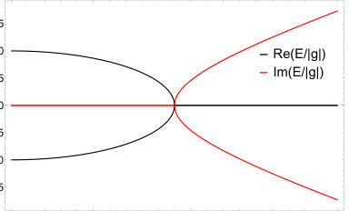
<figcaption class="paper-figure-caption"><b>Fig 1.</b> Figure 1: Energy levels in the two-level system (1.2). For |Γ/g| &gt; 1 the energies become complex conjugate and PT symmetry is broken.</figcaption>
</figure>
<figure class="paper-figure-card">
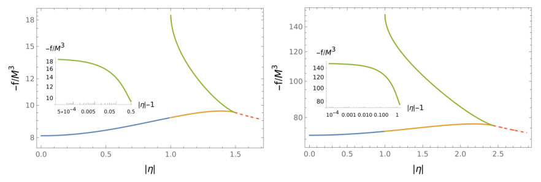
<figcaption class="paper-figure-caption"><b>Fig 2.</b> Figure 2: Free energy of solutions with v = 1 and T/M = 0.5 (left) and T/M = 1 (right) as a function of η. For |η| &gt; 1 two branches of solutions exist. The green branch has lower free energy and is thus thermodynamically preferred. The two branches meet at |ηc| ≈1.49 (left) and |ηc| ≈2.43 (right). For |η| &gt; |ηc| only complex geometries exist: the red dashed line shows the real part of their free energy. In the insets we plot the free energy of the green branch in a log-log plot: it approaches a constant as |η| →1+.</figcaption>
</figure>
<figure class="paper-figure-card">
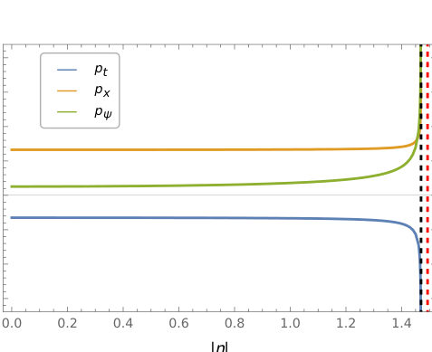
<figcaption class="paper-figure-caption"><b>Fig 3.</b> Figure 3: Kasner coefficients for the non-Hermitian model with v = 1 at T/M = 0.5 in the PT -symmetric phase (|η| &lt; 1) and in the subdominant branch of the PT - restored phase (1 &lt; |η| &lt; ηc ≈1.49). The Kasner coefficients are continuous and diverge as |η| →ηs ≈1.47. For ηs &lt; |η| &lt; ηc the subdominant branch of the PT -restored phase does not have a Kasner singularity and instead has the same singularity as in the dominant branch. In the plot, the red dashed line corresponds to ηc and the black dashed line to ηs.</figcaption>
</figure>
<figure class="paper-figure-card">
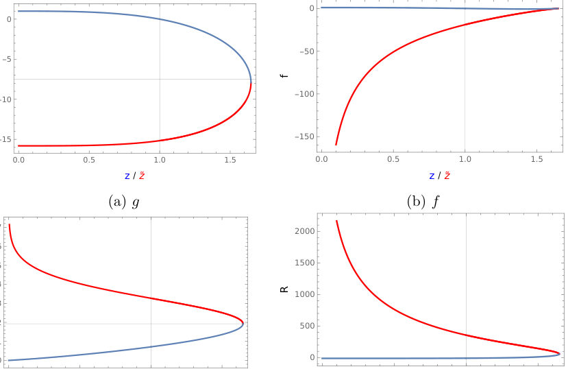
<figcaption class="paper-figure-caption"><b>Fig 4.</b> Figure 4: Fields and Ricci scalar in the dominant branch of the PT -restored phase for a solution with v = 1, T/M = 0.5 and η = 1.45. The blue line represents the patch with coordinate z while the red line denotes the patch with coordinate ˜z. As ˜z →0, g goes to a constant but f and ψ diverge. We conclude that ˜z →0 is a singularity as R diverges as we approach that point.</figcaption>
</figure>
<figure class="paper-figure-card">
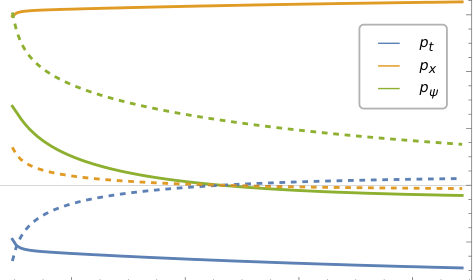
<figcaption class="paper-figure-caption"><b>Fig 5.</b> Figure 5: Kasner coefficients for the non-Hermitian model with v = 1 at T/M = 0.5 in the PT -broken phase. The solid lines denote the real part of the Kasner coefficients and the dashed line the imaginary part. In this phase the geometry is complex and so are the Kasner coefficients.</figcaption>
</figure>
</div>

<p><strong>Summary.</strong> This paper develops a holographic framework to model cosmological singularities beyond the standard BKL description. By introducing controlled violations of the Null Energy Condition through non-Hermitian quantum field theories, the authors predict the existence of a Little Rip cosmology in black hole interiors. This work establishes a potential 'Little Rip/CFT correspondence' using advanced diagnostic tools like heavy-operator correlators.</p>
<p><strong>Why it may be interesting.</strong> The explicit connection between open quantum systems physics (PT-symmetry, non-Hermiticity) and fundamental gravitational/cosmological endpoints (Little Rip) provides a powerful theoretical tool for studying extreme spacetime regimes.</p>
<details>
<summary>Detailed structure</summary>
<p><strong>Main problem.</strong> The research aims to understand cosmological singularities beyond the standard BKL paradigm by analyzing holographic flows derived from non-Hermitian quantum field theories.</p>
<p><strong>Main result.</strong> Controlled violations of the Null Energy Condition via non-Hermiticity lead to a novel, isotropic Little Rip cosmology in the black hole interior, distinct from standard Kasner behavior.</p>
<p><strong>Method.</strong> The study employs holographic techniques (AdS/CFT) to map bulk geometry dynamics onto boundary QFT observables, utilizing analysis of two-sided heavy-operator correlators and thermal state properties.</p>
<p><strong>Model / system.</strong> The model is a holographic dual to a strongly coupled non-Hermitian PT-symmetric QFT. The system involves analyzing the evolution of black hole interiors under conditions violating the NEC.</p>
<p><strong>Key observables.</strong> Two-sided heavy-operator correlators, geodesic length $L_{	ext{ren}}(E)$, and the equation of state $p = -\epsilon - 2\alpha$.</p>
<p><strong>Important parameters / regimes.</strong> The ratio $\eta = |s_{nh}/s_h|$ governing the balance between non-Hermitian ($s_{nh}$) and Hermitian ($s_h$) sources, and the asymptotic behavior of energy density ($\epsilon \propto \log a$).</p>
<p><strong>Assumptions / limitations.</strong> The connection between the deep interior geometry (bulk) and boundary observables (correlators) via the holographic dictionary is central; approximations are used for near-horizon expansion.</p>
<p><strong>Figures summary.</strong> Figures illustrate energy level spectra in PT-symmetric regimes, compare numerical vs. analytical field values ($  ilde{g},    ilde{f}, \psi, R$) across vast scales, and show diagnostic plots related to geodesic length decay rates.</p>
<p><strong>Paper structure.</strong> The paper progresses by first establishing the theoretical framework connecting non-Hermiticity to NEC violation (Chunk 1), then analyzing this using toy models of thermal states and PT symmetry restoration (Chunk 2), culminating in a detailed geometric analysis comparing Little Rip scaling against Kasner metrics (Chunk 3).</p>
</details>
<details>
<summary>Abstract</summary>
<p>Spacelike singularities supported by matter satisfying the null energy condition (NEC) are expected to fall within the Belinski--Khalatnikov--Lifshitz (BKL) paradigm. We show that controlled violations of the NEC in holography can lead to different black hole interiors. In a holographic model dual to a strongly coupled non-Hermitian $\mathcal{PT}$-symmetric QFT, we uncover a novel non-Kasner regime within its real, $\mathcal{PT}$-restored phase. The deep-interior geometry describes an isotropic FLRW cosmology undergoing super-accelerated expansion and approaching a Little Rip. This regime leaves a characteristic imprint on two-sided heavy-operator correlators, allowing it to be distinguished from a standard Kasner interior. Our construction provides a concrete holographic realization of a Little Rip cosmology and lays the groundwork for a Little Rip/CFT correspondence, in which such cosmological regimes can be explored through observables in a non-Hermitian quantum field theory.</p>
</details>
<p><sub><a href="#top">↑ back to top</a></sub></p>

<p><a id="paper-2607.14217"></a></p>
<h3 id="analytic-gradients-for-low-rank-quantum-optimal-control"><a href="http://arxiv.org/abs/2607.14217v1">Analytic gradients for low-rank quantum optimal control</a></h3>
<p><strong>Authors:</strong> Leo Goutte, Vincenzo Savona<br>
<strong>Type:</strong> theory · <strong>Category:</strong> quantum information and computing · <strong>PDF:</strong> <a href="https://arxiv.org/pdf/2607.14217v1">https://arxiv.org/pdf/2607.14217v1</a><br>
<strong>Analysis basis:</strong> full PDF text, analyzed in chunks
<strong>Topic relevance:</strong> <code>methods for driven-dissipative</code> <strong>3/5</strong> · <code>QC/QI experiment</code> <strong>2/5</strong> · <code>non-equilibrium dynamics</code> <strong>2/5</strong> · <code>Keldysh / 2PI / non-Gaussian methods</code> <strong>1/5</strong> · <code>analog quantum simulation</code> <strong>1/5</strong> · <code>correlated / nonlocal dissipation</code> <strong>1/5</strong> · <code>driven-dissipative phase transition</code> <strong>1/5</strong> · <code>quantum measurements</code> <strong>1/5</strong></p>
<div class="figure-strip-hint">↔ Scroll figures horizontally</div>
<div class="paper-figures-scroll">
<figure class="paper-figure-card">
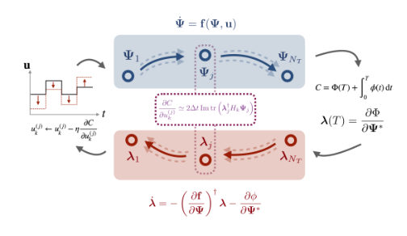
<figcaption class="paper-figure-caption"><b>Fig 1.</b> FIG. 1. Schematic of the LROC algorithm. A forward pass is evaluated with a candidate pulse and the states {Ψj} are stored in memory (blue block). From these, the loss is com- puted and the adjoint state is initialized and λ(T) evolves backward in time following Eq. (9) (red block), computing the gradient at every time tj = (j −1)∆t and subsequently discarding the forward state Ψj. The parameters are up- dated through gradient descent or Adam [34] and the process is repeated until convergence. A similar procedure holds for multi-state objectives by parallelizing over many states (faded dashed arrows). Further details on the numerical implemen- tation are provided in Appendix C 1.</figcaption>
</figure>
<figure class="paper-figure-card">
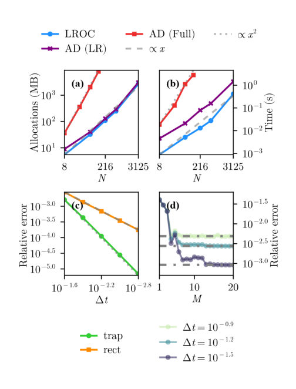
<figcaption class="paper-figure-caption"><b>Fig 2.</b> FIG. 2. (a) Memory footprint and (b) total runtime as a func- tion of the Hilbert space dimension N for LROC (blue), AD with low-rank (purple), and AD with the full master equa- tion (red). (c) The accuracy of the gradient is controlled by ∆t and (d) M, with the latter hitting the plateau given by the trapezoidal error (dash-dotted gray lines). All plots are shown for a three-qubit GHZ state (see Sec. III A) where N is increased by increasing the Hilbert space dimension of the individual multilevel transmons and M = 2 [except for (d)]. The AD results were obtained with the Enzyme.jl [37, 38] package.</figcaption>
</figure>
<figure class="paper-figure-card">
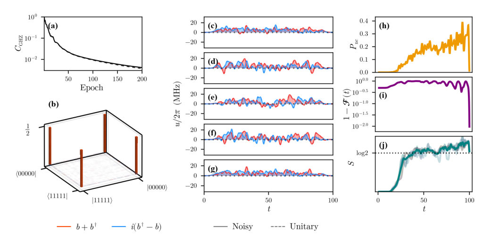
<figcaption class="paper-figure-caption"><b>Fig 3.</b> FIG. 3. Preparation of a 5-qubit GHZ state. (a) Evolution of the loss function (13) as a function of the optimization epoch. (b) Final GHZ state tomography. (c)–(g) Optimal control pulses subject to smoothing and clipping constraints (see Appendix C 2). (h)–(j): Dynamics of the optimized pulse: (h) Population in the non-computational subspace Pnc; (i) Evolution of the infidelity 1 −F = CGHZ; (j) von Neumann entanglement entropy −tr(ˆρk log ˆρk) of each qubit’s reduced density matrix ˆρk = tr\k(ˆρ) (faded lines) and their average (bold line). Parameters: M = 2, J/2π = 50 MHz, ω/2π = 5 GHz, α/2π = 300 MHz, γ/2π = 10 kHz, T = 100 ns.</figcaption>
</figure>
<figure class="paper-figure-card">
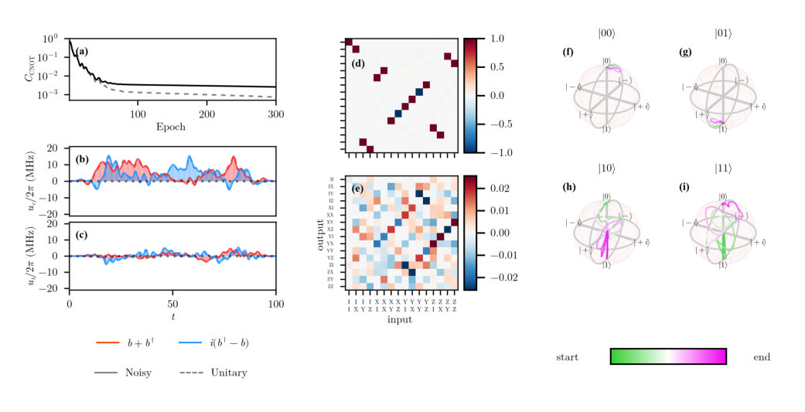
<figcaption class="paper-figure-caption"><b>Fig 4.</b> FIG. 4. Optimization of a the cross-resonance CNOT gate. (a) Loss function (18) during training. (b) Optimized pulses on the control and (c) target qubits. The unitary pulses are overlaid and match quite closely, though they yield an error one order of magnitude lower. (d) Pauli transfer matrices and (e) error relative to the ideal CNOT gate. (f)–(i) Path of the target qubit on its Bloch sphere for each computational basis state under the optimized pulse evolution. Parameters: M = 2, J/2π = 20 MHz, α = 300 MHz, ωc/2π = 5 GHz, ωt/2π = 4.75 GHz, γ/2π = 10 kHz, T = 100 ns.</figcaption>
</figure>
<figure class="paper-figure-card">
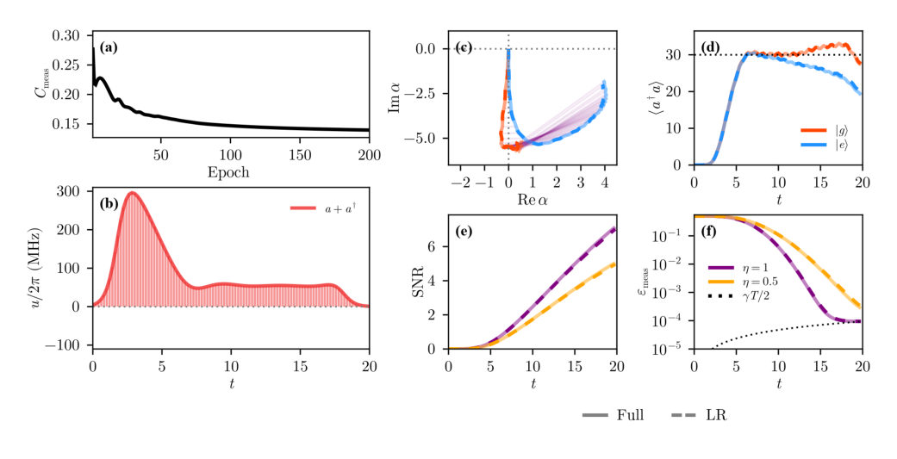
<figcaption class="paper-figure-caption"><b>Fig 5.</b> FIG. 5. Optimal control of the balanced cross-Kerr transmon readout. (a) Convergence of the loss function Eq. (23) and (b) optimized two-step pulse of the sole . (c) Phase-space trajectories and (d) photon number in the resonator computed with the full (faded lines) and low-rank (dashed lines) dynamics. The loss incurs a penalty when a†a &gt; nmax = 30 (dotted black line) to stave off ionization [29, 44, 60]. (e) Signal-to-noise ratio and (f) assignment error for measurement efficiency η = 1 (purple lines) and η = 0.5 (orange lines). Parameters: EC/2π = 300 MHz, EJc + EJ = 50EC, EJC/2π = 8 GHz, ωr/2π = 9.375 GHz, γ/2π = 1.5 kHz, T = 20 ns.</figcaption>
</figure>
</div>

<p><strong>Summary.</strong> This paper presents Low-Rank Optimal Control (LROC), a novel technique to optimize control pulses for open quantum systems like superconducting circuits. By exploiting the low-rank nature of the evolving density matrix, LROC calculates necessary gradients with significantly reduced computational cost compared to standard methods. This breakthrough extends gradient-based optimization to much larger and more complex physical systems.</p>
<p><strong>Why it may be interesting.</strong> This is highly relevant as it provides a scalable framework for optimizing quantum operations in realistic, dissipative hardware platforms by circumventing exponential scaling issues inherent in full density matrix simulations.</p>
<details>
<summary>Detailed structure</summary>
<p><strong>Main problem.</strong> The primary challenge is designing optimal control pulses for open quantum systems where simulating the full density matrix evolution is computationally prohibitive.</p>
<p><strong>Main result.</strong> The authors introduce Low-Rank Optimal Control (LROC), which achieves an analytic gradient calculation with a quadratic improvement in time and memory scaling compared to full master equation methods.</p>
<p><strong>Method.</strong> LROC combines the Low-Rank Approximation (LRA) of the density matrix ($\hat{
ho} \simeq \Psi\Psi^\dagger$) with the adjoint state method, allowing for efficient gradient computation via an adapted Pontryagin maximum principle framework.</p>
<p><strong>Model / system.</strong> The work models open quantum systems using superconducting circuits (transmons), governed by a Lindblad master equation. The control Hamiltonian allows for time-dependent external driving fields.</p>
<p><strong>Key observables.</strong> State preparation fidelity (e.g., GHZ state) and average gate fidelity (e.g., CNOT gate).</p>
<p><strong>Important parameters / regimes.</strong> The low-rank approximation size ($M$) relative to the Hilbert space dimension ($N$), and the time step ($\Delta t$).</p>
<p><strong>Assumptions / limitations.</strong> The method assumes that quantum protocols preserve purity, enabling the accurate low-rank factorization of the density matrix. The gradient derivation involves approximations in discretization.</p>
<p><strong>Figures summary.</strong> Figure 1 schematically illustrates the LROC algorithm flow: forward state propagation, loss calculation, backward adjoint evolution for gradients, and parameter update via gradient descent.</p>
<p><strong>Paper structure.</strong> The paper develops the theory by first establishing the low-rank master equation, then deriving the analytic gradient using the adjoint method (Weak Pontryagin maximum principle), and finally demonstrating its application to various physical tasks like state preparation and gate fidelity optimization.</p>
</details>
<details>
<summary>Abstract</summary>
<p>We introduce low-rank optimal control (LROC), a method for designing control pulses in open quantum systems whose full density-matrix simulation is prohibitively expensive. The method exploits a feature of quantum computing itself: because protocols are designed to preserve purity, the density matrix is dominated by a few pure states and admits an accurate low-rank factorization. LROC propagates only this factorized form and, by deriving the corresponding adjoint equation, obtains the gradient of any differentiable objective at the same reduced cost as the simulation, leading to a quadratic improvement in time and memory compared to the full master equation. We illustrate the breadth of the method on four superconducting-circuit tasks: preparation of a five-qubit GHZ state, a CNOT gate, qubit readout, and an error correction primitive, modeled with realistic multilevel transmons, decay, and strong drives, in each case reaching fidelities consistent with the intrinsic dissipation limits. LROC thereby extends pulse-level optimization to system sizes beyond the reach of existing gradient-based methods.</p>
</details>
<p><sub><a href="#top">↑ back to top</a></sub></p>

<p><a id="paper-2607.15119"></a></p>
<h3 id="thermodynamic-theory-of-voting-and-eu-elections"><a href="http://arxiv.org/abs/2607.15119v1">Thermodynamic theory of voting and EU elections</a></h3>
<p><strong>Authors:</strong> Klaus M. Frahm, Dima L. Shepelyansky<br>
<strong>Type:</strong> theory · <strong>Category:</strong> statistical mechanics · <strong>PDF:</strong> <a href="https://arxiv.org/pdf/2607.15119v1">https://arxiv.org/pdf/2607.15119v1</a><br>
<strong>Analysis basis:</strong> full PDF text, analyzed in chunks
<strong>Topic relevance:</strong> <code>driven-dissipative phase transition</code> <strong>3/5</strong> · <code>non-equilibrium dynamics</code> <strong>3/5</strong> · <code>non-equilibrium universality</code> <strong>2/5</strong> · <code>Frenkel-Kontorova</code> <strong>1/5</strong> · <code>Keldysh / 2PI / non-Gaussian methods</code> <strong>1/5</strong> · <code>correlated / nonlocal dissipation</code> <strong>1/5</strong> · <code>methods for driven-dissipative</code> <strong>1/5</strong></p>
<div class="figure-strip-hint">↔ Scroll figures horizontally</div>
<div class="paper-figures-scroll">
<figure class="paper-figure-card">
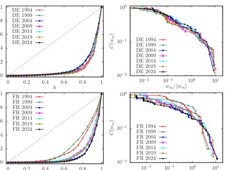
<figcaption class="paper-figure-caption"><b>Fig 1.</b> Fig. 1: (Color on-line) Left: Lorenz curves of EU elections of Germany (DE; top) and France (FR, bottom) since 1994. The x-axis corresponds to the cumulated fraction of house- holds/political parties (h) and the y-axis to the cumulated frac- tion of wealth/obtained votes (w). The dashed black line corre- sponds to the line of perfect equipartition w = h. The Gini co- efficients G and number of political parties Np for all cases can be found in Table 1. Right: Pareto curves C(wm) for the same data where C(wm) represents the fraction of parties with a vote fraction larger than wm (analogous to wealth). The x-axis cor- responds to rescaled values wm/⟨wm⟩where ⟨wm⟩= 1/Np is the average vote...</figcaption>
</figure>
<figure class="paper-figure-card">
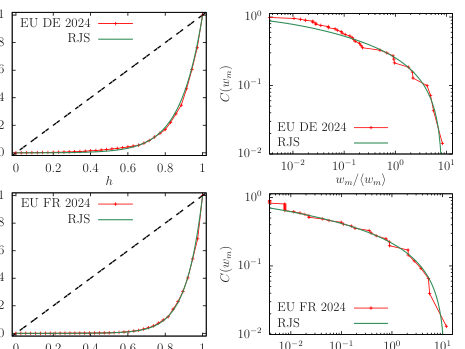
<figcaption class="paper-figure-caption"><b>Fig 2.</b> Fig. 2: (Color on-line) As Fig. 1 for the EU 2024 elections of DE (top) and FR (bottom). In addition, to the real data (red points) also the (green) theoretical RJS Lorenz curves (left panels) are shown (see Table 1 for specific values of G, ε and Np). For the Pareto curves (right panels) the average ⟨wm⟩is either 1/Np (real data) or ε (RJS curves). See also SupMat Figs. S1 and S2 for similar figures for the DE/FR EU elections of 1994 (Fig. S1) and 2014 (Fig. S2) (these Figs. also show curves for RJE model being very close to the RJS ones).</figcaption>
</figure>
<figure class="paper-figure-card">
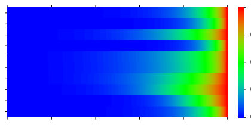
<figcaption class="paper-figure-caption"><b>Fig 3.</b> Fig. 3: (Color on-line) Density color plot of Lorenz curves for 10 countries (2024 EU elections) obtained from the RJS model for the 6 countries DE, FR, IT, ES, NL, CZ and from the op- timal RJE model for the 4 countries PL, RO, BE, SE (cases with a visible difference between RJS and optimal RJE curve). The x-axis corresponds to the cumulated fraction of house- holds/political parties (h) and the y-axis to the countries (with order of increasing population from bottom to top). The color value according to the colorbar shows the cumulated fraction of wealth/obtained votes (w). See also SupMat Figs. S3-S6 for figures in the style of Fig. 2 with Lorenz and Pareto curves for the 2024 EU...</figcaption>
</figure>
<figure class="paper-figure-card">
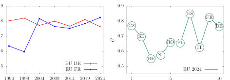
<figcaption class="paper-figure-caption"><b>Fig 4.</b> Fig. 4: (Color on-line) Left: Dependence of the Gini coeffi- cient G for the EU elections of DE (red) and FR (blue) on the election year (using the same data as in Fig. 1). Right: Gini coefficient G for the EU elections 2024 for 10 European coun- tries (green) ordered with increasing size of population (from left to right; using the same data as in Fig. 3).</figcaption>
</figure>
<figure class="paper-figure-card">
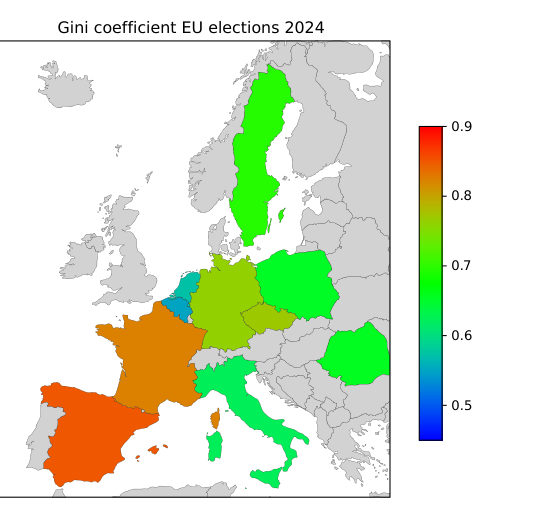
<figcaption class="paper-figure-caption"><b>Fig 5.</b> Fig. 5: (Color on-line) Europe map color plot of the Gini co- efficient of the EU elections of 2024 of 10 countries using the data of the right panel of Fig. 4.</figcaption>
</figure>
</div>

<p><strong>Summary.</strong> This paper proposes a Thermodynamic Theory of Voting (TTV) that models political vote distribution using principles from statistical mechanics. It shows that the observed inequality in election results closely follows patterns predicted by Rayleigh-Jeans thermalization and condensation phenomena. This suggests that electoral outcomes can be analyzed using tools developed for studying wealth or energy distributions in physical systems.</p>
<p><strong>Why it may be interesting.</strong> While not directly quantum, the core mathematical machinery—thermalization, energy conservation, and phase transitions leading to condensation—is central to non-equilibrium statistical mechanics, which informs open quantum systems dynamics.</p>
<details>
<summary>Detailed structure</summary>
<p><strong>Main problem.</strong> To develop a Thermodynamic Theory of Voting (TTV) that statistically describes the distribution of party votes in large-scale elections, drawing parallels with established physical models.</p>
<p><strong>Main result.</strong> The TTV successfully provides a good statistical description for vote distributions in EU and French elections by modeling them using Rayleigh-Jeans (RJ) thermalization and condensation phenomena.</p>
<p><strong>Method.</strong> The authors adapt concepts from statistical mechanics, particularly the Wealth Thermalization Hypothesis, to model political interactions as an energy conservation system governed by RJ statistics.</p>
<p><strong>Model / system.</strong> The system models party votes/political power distribution using coupled nonlinear oscillators whose energies are analogous to vote fractions. The theory relies on deriving distributions from conserved total energy and probability norm.</p>
<p><strong>Key observables.</strong> Lorenz curves, Pareto curves, and the Gini coefficient ($G$) are used as primary diagnostics to quantify inequality in vote shares.</p>
<p><strong>Important parameters / regimes.</strong> Temperature/Energy ($\epsilon$), number of parties ($N_p$), and model parameters derived from fitting real data (e.g., $a$ parameter for RJE).</p>
<p><strong>Assumptions / limitations.</strong> The theory assumes that opinion formation results from complex, classical nonlinear interactions leading to thermalization; the analysis is based on the RJ distribution.</p>
<p><strong>Figures summary.</strong> Figures compare empirical Lorenz and Pareto curves from EU/French elections (2014-2024) against theoretical predictions derived from the RJS model. Maps show Gini coefficients across various EU countries.</p>
<p><strong>Paper structure.</strong> The paper introduces TTV, establishes parallels with wealth inequality models exhibiting RJ condensation, details the use of Lorenz/Pareto curves and Gini coefficients, and applies these methods systematically to multiple historical election datasets (EU and French).</p>
</details>
<details>
<summary>Abstract</summary>
<p>We introduce a thermodynamic theory of voting and show that it provides a good description of distribution of party votes in EU elections. The theory traces parallels between system energies of coupled nonlinear oscillators and party vote fractions. Such a classical system evolution is characterized by the conservation of total energy and probability norm that leads to the Rayleigh-Jeans (RJ) thermalization and condensation at low energy states. A similar thermalization also describes the wealth inequality in society. This feature belongs to the phenomena of constraint driven condensation known in statistical mechanics. We show that the RJ theory well depicts the Lorenz and Pareto curves obtained from the EU vote results. The theory also recovers the dispersion of votes between candidates of first round presidential elections in France.</p>
</details>
<p><sub><a href="#top">↑ back to top</a></sub></p>

<p><a id="paper-2607.14949"></a></p>
<h3 id="avoiding-dilution-using-diffusion-and-vision-transformers-to-resolve-majorana-features-in-nanowires-at-high-temperature"><a href="http://arxiv.org/abs/2607.14949v1">Avoiding Dilution: Using Diffusion and Vision Transformers to resolve Majorana Features in Nanowires at High Temperature</a></h3>
<p><strong>Authors:</strong> Jacob R. Taylor, Haining Pan, Jay D. Sau, Sankar Das Sarma<br>
<strong>Type:</strong> both · <strong>Category:</strong> disordered systems and neural networks · <strong>PDF:</strong> <a href="https://arxiv.org/pdf/2607.14949v1">https://arxiv.org/pdf/2607.14949v1</a><br>
<strong>Analysis basis:</strong> full PDF text, analyzed in chunks
<strong>Topic relevance:</strong> <code>analog quantum simulation</code> <strong>3/5</strong> · <code>methods for driven-dissipative</code> <strong>3/5</strong> · <code>driven-dissipative phase transition</code> <strong>2/5</strong> · <code>Keldysh / 2PI / non-Gaussian methods</code> <strong>1/5</strong> · <code>Kondo &amp; dissipative impurity</code> <strong>1/5</strong> · <code>non-equilibrium dynamics</code> <strong>1/5</strong></p>
<div class="figure-strip-hint">↔ Scroll figures horizontally</div>
<div class="paper-figures-scroll">
<figure class="paper-figure-card">
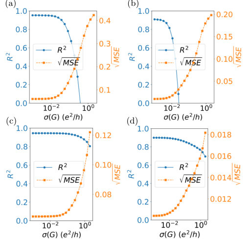
<figcaption class="paper-figure-caption"><b>Fig 1.</b> FIG. 2: Local (left) and nonlocal (right) conductance reconstruction fidelity for varying levels of error. The first (second) row is for networks without (with) measurement error during the training stage.</figcaption>
</figure>
<figure class="paper-figure-card">

<figcaption class="paper-figure-caption"><b>Fig 2.</b> FIG. 1: Low-temperature conductance reconstructed from high-temperature data by reverse convolution (1st row), measured directly (2nd row), and predicted by a neural network using high-temperature data (3rd row). Local conductances are shown in (a,b), and nonlocal conductances in (c,d). Additional maps can be found in Fig. 12-23, including the corresponding high temperature maps. The chemical potential shown is 0.4 meV.</figcaption>
</figure>
<figure class="paper-figure-card">

<figcaption class="paper-figure-caption"><b>Fig 3.</b> FIG. 3: TV prediction fidelity for varying levels of Gaussian measurement noise of standard deviation σ(G). R2(TV ) vs. σ(G) for the neural network without (a) and with (b) noise added during the training stage.</figcaption>
</figure>
<figure class="paper-figure-card">

<figcaption class="paper-figure-caption"><b>Fig 4.</b> FIG. 4: Comparison of expected and predicted TV from high-T conductance. Panels (a)-(d) are different device realizations with left being the expected TV and right being the predicted TV. The disorder levels are σdis = (a) 0.716 meV, (b) 3.55 meV, (c) 0.237 meV, and (d) 1.586 meV, with correlation lengths of (a) 27 nm, (b) 31.9 nm, (c) 47 nm, and (d) 48 nm respectively.</figcaption>
</figure>
<figure class="paper-figure-card">

<figcaption class="paper-figure-caption"><b>Fig 5.</b> FIG. 5: Schematic of the SWIN-Block used in the Conductance U-Net. The block alternates standard and shifted-window attention: features are partitioned into W × W windows, processed by a window-wise transformer with H heads, stitched back together, and repeated for depth D. The shifted-window stage enables information exchange between neighboring windows.</figcaption>
</figure>
</div>

<p><strong>Summary.</strong> This work introduces a machine-learning pipeline to overcome the experimental bottleneck of measuring Majorana zero modes at ultra-low temperatures. By training neural networks on simulated paired high- and low-temperature conductance data, the authors demonstrate that key topological features can be reliably inferred from simpler, higher-temperature measurements. This offers a practical acceleration tool for quantum device development.</p>
<p><strong>Why it may be interesting.</strong> The application of advanced deep learning architectures like diffusion models and Vision Transformers to extract fundamental quantum signatures from noisy, experimentally accessible data is highly relevant for open quantum systems characterization.</p>
<details>
<summary>Detailed structure</summary>
<p><strong>Main problem.</strong> Characterizing Majorana zero modes (MZMs) in nanowires typically requires slow, resource-intensive ultra-low temperature measurements.</p>
<p><strong>Main result.</strong> Machine learning models can successfully reconstruct low-temperature conductance and predict topological visibility using only easier-to-measure high-temperature data.</p>
<p><strong>Method.</strong> The authors employed two machine learning approaches: a diffusion-inspired U-Net Transformer for conductance reconstruction, and a Video Vision Transformer (ViViT) for direct prediction of topological visibility.</p>
<p><strong>Model / system.</strong> The study models semiconductor–superconductor hybrid nanowires hosting topological superconductors, governed by a Bogoliubov-de Gennes Hamiltonian. The analysis compares high-temperature simulations to target low-temperature MZM properties.</p>
<p><strong>Key observables.</strong> Local and nonlocal conductances ($G_{ii}, G_{ij}$), and the Topological Visibility (TV).</p>
<p><strong>Important parameters / regimes.</strong> Ultra-low temperatures ($\approx 50 	ext{ mK}$), high-temperature measurements, disorder strength, superconducting gap $\Delta_0$.</p>
<p><strong>Assumptions / limitations.</strong> The primary assumption is that ML models can learn the underlying physics to invert the thermal broadening effect inherent in high-temperature measurements.</p>
<p><strong>Figures summary.</strong> Figures illustrate network architectures (SWIN-Block, UNETR upsampling) and compare reconstruction/prediction results against direct measurement or inverse convolution methods.</p>
<p><strong>Paper structure.</strong> The paper first establishes the difficulty of low-T MZM detection. It then details using ML on paired high/low-T simulations to train two networks: one for conductance reconstruction (diffusion model) and one for TV prediction (ViViT). Results demonstrate high fidelity in both tasks.</p>
</details>
<details>
<summary>Abstract</summary>
<p>Identifying Majorana zero modes in semiconductor--superconductor nanowires requires ultra-low temperature transport measurements in dilution refrigerators, making device screening slow and resource-intensive. Here, we investigate whether high-temperature conductance data can be used to infer low-temperature Majorana nanowire properties before committing devices to dilution-refrigerator characterization. We generate paired high- and low-temperature conductance simulations for disordered Majorana nanowires and train neural networks to perform two related tasks. First, we use a Shifted Window U-Net Transformer diffusion-inspired architecture to reconstruct low-temperature conductance from thermally broadened high-temperature measurements, achieving high-fidelity recovery with $R^2 \approx {0.95}$ for local conductance and $R^2 \approx {0.91}$ for nonlocal conductance. Second, we train a Video Vision Transformer-based network to predict the low-temperature topological visibility directly from high-temperature conductance, obtaining $R^2 \approx {0.80}$. These results demonstrate that machine-learning models can recover and infer low-temperature Majorana features from experimentally easier high-temperature data, providing a practical route for rejecting poor devices early thus avoiding slow and resource-intensive dilution refrigeration for non-promising devices. This high-temperature screening approach could substantially accelerate the experimental feedback loop for Majorana nanowire device development.</p>
</details>
<p><sub><a href="#top">↑ back to top</a></sub></p>

<p><a id="paper-2607.14520"></a></p>
<h3 id="moment-resolved-readout-and-reservoir-diversity-in-nonequilibrium-langevin-computing"><a href="http://arxiv.org/abs/2607.14520v1">Moment-Resolved Readout and Reservoir Diversity in Nonequilibrium Langevin Computing</a></h3>
<p><strong>Authors:</strong> JiZheng Duan, MingYang Zhao, YanWei Chen, Lei Yang<br>
<strong>Type:</strong> theory · <strong>Category:</strong> statistical mechanics · <strong>PDF:</strong> <a href="https://arxiv.org/pdf/2607.14520v1">https://arxiv.org/pdf/2607.14520v1</a><br>
<strong>Analysis basis:</strong> full PDF text, analyzed in chunks
<strong>Topic relevance:</strong> <code>methods for driven-dissipative</code> <strong>3/5</strong> · <code>non-equilibrium dynamics</code> <strong>3/5</strong> · <code>non-equilibrium universality</code> <strong>2/5</strong> · <code>Keldysh / 2PI / non-Gaussian methods</code> <strong>1/5</strong> · <code>correlated / nonlocal dissipation</code> <strong>1/5</strong> · <code>driven-dissipative phase transition</code> <strong>1/5</strong></p>
<div class="figure-strip-hint">↔ Scroll figures horizontally</div>
<div class="paper-figures-scroll">
<figure class="paper-figure-card">

<figcaption class="paper-figure-caption"><b>Fig 1.</b> FIG. 1. Physical mechanism of the thermodynamic neuron. (a) Driven quartic potential U(x, I) = J2x2 + J4x4 −Ix showing input-induced symmetry deformation relative to the symmetric reference case I = 0. (b) Representative schematic overdamped Langevin paths on the driven nonlinear energy landscape, illustrating finite-time thermal excursions and nonlinear distribution reshaping.</figcaption>
</figure>
<figure class="paper-figure-card">

<figcaption class="paper-figure-caption"><b>Fig 2.</b> FIG. 2. Moment-resolved thermodynamic response represen- tation. Schematic finite-time probability density P(x(tf) | I), whose raw moment channels E[x], E[x2], and E[x4] encode mean displacement, fluctuation scale, and high-amplitude nonlinear excursions, respectively. These channels define the local moment-resolved response representation.</figcaption>
</figure>
<figure class="paper-figure-card">

<figcaption class="paper-figure-caption"><b>Fig 3.</b> FIG. 3. Error-mode decorrelation analysis on the MNIST full test set. (a) Schematic error sets EKr; numbers denote misclassified test samples, and Jij denotes the Jaccard overlap between wrong sets. (b) Pairwise wrong-set Jaccard overlap matrix, with solid boxes marking the highly overlapping K1–K2 pair and dashed boxes marking the more decorrelated K2–K3 pair. (c) Ablation accuracy for individual, pairwise, and full three-reservoir response representations. The K1 + K2 result illustrates the performance degradation under concatenation, whereas full feature-level fusion gives the best observed test accuracy among the compared configurations.</figcaption>
</figure>
<figure class="paper-figure-card">

<figcaption class="paper-figure-caption"><b>Fig 4.</b> FIG. 4. Geometric schematic of information mapping in decision-level and feature-level fusion. (a) In decision-level late fusion, each reservoir response block ϕKr ∈R768 is first compressed by an independent local readout into a 10-dimensional logit vector zr. This early bottleneck constrains each reservoir to an independently optimized representation, preventing the final fusion layer from leveraging the full uncompressed feature geometry. (b) In feature-level fusion, the three response blocks are concatenated into the full thermodynamic response representation Φ ∈R2304. A unified readout hyperplane acts directly on the uncompressed joint feature manifold, jointly optimizing all...</figcaption>
</figure>
</div>

<p><strong>Summary.</strong> This paper advances nonlinear thermodynamic computing by replacing simple mean readout with moment-resolved statistics ($\mathbb{E}[\mathbf{x}], \mathbb{E}[\mathbf{x}^{\odot 2}], \mathbb{E}[\mathbf{x}^{\odot 4}]$). They demonstrate that combining multiple, independently trained reservoirs using feature-level fusion significantly boosts classification accuracy on MNIST. This suggests that capturing higher-order fluctuations and leveraging reservoir heterogeneity are key design principles for these physical computing systems.</p>
<p><strong>Why it may be interesting.</strong> This work connects concepts from non-equilibrium statistical mechanics (Langevin dynamics, finite-time observables) directly to machine learning architectures, providing a physical mechanism for feature extraction beyond simple mean measurements.</p>
<details>
<summary>Detailed structure</summary>
<p><strong>Main problem.</strong> The research aims to improve nonlinear thermodynamic computing by extending readout mechanisms from using only the mean expectation value to utilizing higher-order polynomial raw moments.</p>
<p><strong>Main result.</strong> A heterogeneous multi-reservoir architecture employing feature-level fusion of moment-resolved readouts achieved state-of-the-art classification accuracy (96.95%) on MNIST, suggesting that joint optimization over multiple reservoirs is beneficial.</p>
<p><strong>Method.</strong> The authors use Langevin dynamics to simulate non-equilibrium systems and construct a response vector from the first, second, and fourth raw polynomial moments of the system's state variables.</p>
<p><strong>Model / system.</strong> The model is based on nonlinear thermodynamic computers driven by overdamped Langevin dynamics with quartic confinement. The dynamics are generally nonconservative, meaning they do not derive from a global scalar energy landscape.</p>
<p><strong>Key observables.</strong> Raw polynomial moments: $\mathbb{E}[\mathbf{x}]$, $\mathbb{E}[\mathbf{x}^{\odot 2}]$, and $\mathbb{E}[\mathbf{x}^{\odot 4}]$; Test Accuracy on MNIST (e.g., 96.95%).</p>
<p><strong>Important parameters / regimes.</strong> Finite observation time ($t_f$); Reservoir coupling weights ($\mathbf{W}$); Temperature/Fluctuation scale ($k_B T$).</p>
<p><strong>Assumptions / limitations.</strong> The readout is based on finite-time Monte Carlo sampling of the stochastic dynamics, and the analysis assumes that feature-level fusion (concatenation) allows for joint optimization while maintaining an additive linear classifier structure.</p>
<p><strong>Figures summary.</strong> Figures likely compare performance metrics like test accuracy across different reservoir combination strategies (single vs. fused) and show error overlap analyses using Jaccard coefficients to support the benefit of heterogeneity.</p>
<p><strong>Paper structure.</strong> The paper progresses by first establishing the limitations of mean-only readout, then proposing moment-resolved observables ($\mathbb{E}[\mathbf{x}], \mathbb{E}[\mathbf{x}^{\odot 2}], \mathbb{E}[\mathbf{x}^{\odot 4}]$), and finally demonstrating superior performance using a heterogeneous multi-reservoir architecture with feature-level fusion.</p>
</details>
<details>
<summary>Abstract</summary>
<p>Nonlinear thermodynamic computers based on Langevin dynamics exploit thermal fluctuations as a physical substrate for computation. Recent work has shown that quartic-confined fluctuating degrees of freedom can act as thermodynamic neurons capable of nonlinear function approximation at finite observation times. Here we extend this paradigm from mean-only readout to moment-resolved readout. Instead of representing each driven reservoir solely by its first moment, we construct a response vector from the elementwise raw polynomial moments   \(\mathbb{E}[\bm{x}]\),   \(\mathbb{E}[\bm{x}^{\odot 2}]\), and   \(\mathbb{E}[\bm{x}^{\odot 4}]\).   These observables combine displacement and central-shape contributions and are naturally aligned with the linear, quadratic, and quartic terms of the local driven dynamics.   We further introduce a heterogeneous multi-reservoir architecture in which three reservoirs with distinct initialization and training histories form a joint \(2304\)-dimensional response representation. Under the fixed MNIST \(60000/10000\) reproduction protocol, feature-level fusion achieves the best observed accuracy of \(9695/10000=96.95\%\), compared with \(9682/10000=96.82\%\) for the strongest single-reservoir model and \(9684/10000=96.84\%\) for equal-weight logit averaging. An exact paired McNemar test does not establish a statistically significant improvement over the strongest single reservoir, but the ablation and wrong-set overlap results provide suggestive evidence of complementary classification errors. These results motivate higher-order polynomial-moment readout and reservoir heterogeneity as candidate design principles for finite-time Langevin computing.</p>
</details>
<p><sub><a href="#top">↑ back to top</a></sub></p>

<p><a id="paper-2607.15124"></a></p>
<h3 id="on-the-origin-of-finite-entanglement-scaling"><a href="http://arxiv.org/abs/2607.15124v1">On the origin of finite entanglement scaling</a></h3>
<p><strong>Authors:</strong> Luke Hodgkiss, Laurens Lootens, Atsushi Ueda, Bram Vanhecke, Frank Verstraete<br>
<strong>Type:</strong> theory · <strong>Category:</strong> numerical methods · <strong>PDF:</strong> <a href="https://arxiv.org/pdf/2607.15124v1">https://arxiv.org/pdf/2607.15124v1</a><br>
<strong>Analysis basis:</strong> full PDF text, analyzed in chunks
<strong>Topic relevance:</strong> <code>entanglement &amp; information structure</code> <strong>3/5</strong> · <code>methods for driven-dissipative</code> <strong>3/5</strong> · <code>non-equilibrium dynamics</code> <strong>2/5</strong> · <code>analog quantum simulation</code> <strong>1/5</strong> · <code>driven-dissipative phase transition</code> <strong>1/5</strong> · <code>non-equilibrium universality</code> <strong>1/5</strong></p>
<div class="figure-strip-hint">↔ Scroll figures horizontally</div>
<div class="paper-figures-scroll">
<figure class="paper-figure-card">

<figcaption class="paper-figure-caption"><b>Fig 1.</b> Low-resolution page preview, page 2</figcaption>
</figure>
<figure class="paper-figure-card">

<figcaption class="paper-figure-caption"><b>Fig 2.</b> Low-resolution page preview, page 3</figcaption>
</figure>
<figure class="paper-figure-card">

<figcaption class="paper-figure-caption"><b>Fig 3.</b> Low-resolution page preview, page 4</figcaption>
</figure>
<figure class="paper-figure-card">

<figcaption class="paper-figure-caption"><b>Fig 4.</b> Low-resolution page preview, page 5</figcaption>
</figure>
<figure class="paper-figure-card">

<figcaption class="paper-figure-caption"><b>Fig 5.</b> Low-resolution page preview, page 6</figcaption>
</figure>
</div>

<p><strong>Summary.</strong> This paper tackles the fundamental problem of quantifying errors when approximating critical quantum ground states using tensor networks like MPS and PEPS. The authors introduce a novel, stable linear algebra technique to calculate necessary derivatives for optimization. This allows them to precisely determine the physical nature of finite-entanglement scaling perturbations in models like the Ising chain.</p>
<p><strong>Why it may be interesting.</strong> This work provides a powerful, stable computational tool for optimizing complex quantum states (PEPS/MPS), which is crucial for simulating strongly correlated materials or open quantum systems where exact diagonalization fails.</p>
<details>
<summary>Detailed structure</summary>
<p><strong>Main problem.</strong> The paper addresses determining the actual physical perturbations induced by approximating critical quantum systems using Matrix Product States (MPS) and developing a robust method to calculate derivatives of 2D tensor networks.</p>
<p><strong>Main result.</strong> They show that MPS approximations induce relevant perturbations, which can be calculated precisely via implicit differentiation, providing insights into finite entanglement scaling beyond simple CFT predictions.</p>
<p><strong>Method.</strong> The core methodology involves developing a sparse linear solver to compute forward and backward derivatives of 2D tensor networks implicitly, circumventing instabilities in traditional automatic differentiation techniques.</p>
<p><strong>Model / system.</strong> The study focuses on critical quantum Hamiltonians modeled by MPS (1D) and two-dimensional lattice models like the Ising model represented by PEPS. The analysis is performed on square lattices using tensor network representations.</p>
<p><strong>Key observables.</strong> Perturbation ($\delta$), Correlation Length ($\xi$), Overlap between induced perturbation and physical operators, and the Schatten 4-norm of the transfer matrix.</p>
<p><strong>Important parameters / regimes.</strong> Bond Dimension ($\chi$) is the key parameter controlling the approximation quality; finite size/entanglement scaling are central concepts.</p>
<p><strong>Assumptions / limitations.</strong> The analysis is simplified by restricting to tensor networks on square lattices with real, rotationally/reflectionally invariant tensors for initial demonstrations.</p>
<p><strong>Figures summary.</strong> TABLE I demonstrates that the overlap of the perturbation causing the largest change in correlation length exhibits perfect polynomial scaling with bond dimension $\chi$.</p>
<p><strong>Paper structure.</strong> The paper develops the mathematical machinery (sparse linear solver, implicit differentiation) first, and then applies it to analyze finite-$\chi$ effects in critical 1D and 2D systems, comparing results against established CFT predictions.</p>
</details>
<details>
<summary>Abstract</summary>
<p>The concept of finite entanglement scaling forms one of the pillars on which the tensor network ecosystem is built. In this paper, we resolve the open problem of determining the actual perturbations induced by matrix product state approximations of critical systems, and we demonstrate that these can be quite different than the ones predicted by conformal field theory. To that aim, we develop a sparse linear solver to calculate the forward and backward derivatives of 2-dimensional tensor networks with respect to their defining parameters in an implicit way. This algorithm is of independent interest as it provides a primitive for the variational optimization of projected entangled pair states that circumvents the instabilities plaguing traditional automatic differentiation methods.</p>
</details>
<p><sub><a href="#top">↑ back to top</a></sub></p>

<p><a id="paper-2607.14343"></a></p>
<h3 id="quantum-markov-chains-for-an-asymmetric-mixed-ising-xy-model-on-a-cayley-tree"><a href="http://arxiv.org/abs/2607.14343v1">Quantum Markov Chains for an Asymmetric Mixed Ising-XY Model on a Cayley Tree</a></h3>
<p><strong>Authors:</strong> Farrukh Mukhamedov<br>
<strong>Type:</strong> theory · <strong>Category:</strong> statistical mechanics · <strong>PDF:</strong> <a href="https://arxiv.org/pdf/2607.14343v1">https://arxiv.org/pdf/2607.14343v1</a><br>
<strong>Analysis basis:</strong> full PDF text, analyzed in chunks
<strong>Topic relevance:</strong> <code>methods for driven-dissipative</code> <strong>3/5</strong> · <code>entanglement &amp; information structure</code> <strong>2/5</strong> · <code>non-equilibrium dynamics</code> <strong>2/5</strong> · <code>Keldysh / 2PI / non-Gaussian methods</code> <strong>1/5</strong> · <code>correlated / nonlocal dissipation</code> <strong>1/5</strong> · <code>driven-dissipative phase transition</code> <strong>1/5</strong> · <code>non-equilibrium universality</code> <strong>1/5</strong></p>
<div class="figure-strip-hint">↔ Scroll figures horizontally</div>
<div class="paper-figures-scroll">
<figure class="paper-figure-card">

<figcaption class="paper-figure-caption"><b>Fig 1.</b> Figure 1: The first levels of Γ2 + and the locally asymmetric mixed Ising–XY assignment of interactions.</figcaption>
</figure>
<figure class="paper-figure-card">

<figcaption class="paper-figure-caption"><b>Fig 2.</b> Figure 2: The local three-site interaction block at a vertex x. The left child edge is the coherent XY exchange edge, while the right child edge is the diagonal Ising edge.</figcaption>
</figure>
<figure class="paper-figure-card">

<figcaption class="paper-figure-caption"><b>Fig 3.</b> Figure 3: The local transfer operator as a one-step boundary-law update: successor boundary data are inserted at the two children, conjugated by the local interaction block, and traced over the successors to produce the parent boundary operator.</figcaption>
</figure>
</div>

<p><strong>Summary.</strong> This paper rigorously analyzes the quantum dynamics of a mixed Ising-XY model situated on an infinite Cayley tree. By utilizing Quantum Markov Chain theory, the authors prove that the system admits a unique translation-invariant steady state solution. This establishes strong mathematical constraints on the possible physical states achievable by this complex interacting spin system.</p>
<p><strong>Why it may be interesting.</strong> This work provides rigorous mathematical tools (QMCs) to characterize equilibrium states in complex quantum spin systems on infinite lattices, which is crucial for understanding critical phenomena and phase transitions in condensed matter theory.</p>
<details>
<summary>Detailed structure</summary>
<p><strong>Main problem.</strong> The study investigates Quantum Markov Chains (QMC) associated with a mixed Ising-XY model defined on an infinite Cayley tree structure.</p>
<p><strong>Main result.</strong> The paper proves the existence and uniqueness of a translation-invariant QMC solution for all coupling constants, alongside demonstrating that the reduced dynamics possess no periodic points beyond period one.</p>
<p><strong>Method.</strong> The analysis employs the compatibility criterion for tree-indexed QMCs, deriving boundary equations solved via transfer operators and analyzing the resulting finite-dimensional dynamical system.</p>
<p><strong>Model / system.</strong> The model is a mixed Ising-XY Hamiltonian defined on the semi-infinite rooted Cayley tree of order two. The interactions are locally asymmetric: XY coupling acts along one branch, and Ising coupling acts along the other.</p>
<p><strong>Key observables.</strong> Local two-site entanglement; the boundary law parameters (Bloch coefficients); existence/uniqueness of translation-invariant solutions.</p>
<p><strong>Important parameters / regimes.</strong> Coupling strengths ($J_I, J_{XY}$), inverse temperature ($eta$), and the structure of the tree ($\Gamma_2^+$).</p>
<p><strong>Assumptions / limitations.</strong> The analysis relies on working with the normalized trace convention and assuming the existence of a unique positive translation-invariant solution to proceed.</p>
<p><strong>Figures summary.</strong> Figure 1 illustrates the locally asymmetric mixed Ising–XY assignment (XY on one edge, Ising on the other) on the Cayley Tree. Figure 2 shows the local three-site interaction block at a vertex.</p>
<p><strong>Paper structure.</strong> The paper establishes the QMC framework using compatibility criteria, derives the boundary equation and transfer operator, analyzes the resulting reduced dynamical system for periodic points, proves uniqueness theorems for the translation-invariant solution, and concludes with entanglement calculations.</p>
</details>
<details>
<summary>Abstract</summary>
<p>We study a mixed quantum Ising-$XY$ model on the semi-infinite rooted Cayley tree of order two. For every vertex $u$, the edge $\langle u,(u,1)\rangle$ carries an $XY$ interaction and the edge $\langle u,(u,2)\rangle$ carries an Ising interaction. Using the compatibility criterion for tree-indexed quantum Markov chains and consistently working with the normalized trace, we derive the translation-invariant boundary equation and compute explicitly the associated local transfer operator, namely the one-step partial-trace map which propagates successor boundary data to the parent vertex. We prove that the boundary equation has a unique positive translation-invariant solution for all $J_I,J_{XY}\in\mathbb R$ and $β>0$. Hence the model admits a unique translation-invariant quantum Markov chain generated by a positive translation-invariant boundary condition. We also show that the reduced boundary-law dynamics, i.e. the induced finite-dimensional recursion for the boundary-law parameters, has no admissible periodic points of period greater than one and compute the local two-site entanglement on the natural three-site cluster of the tree.</p>
</details>
<p><sub><a href="#top">↑ back to top</a></sub></p>

<p><a id="paper-2607.14282"></a></p>
<h3 id="worldline-susceptibility-scheduling-for-quantum-annealing-beyond-local-adiabatic-evolution"><a href="http://arxiv.org/abs/2607.14282v1">Worldline-Susceptibility Scheduling for Quantum Annealing Beyond Local-Adiabatic Evolution</a></h3>
<p><strong>Authors:</strong> Suraj Singh, Lakshya Nagpal, Vikas Chauhan, S. R. Hassan<br>
<strong>Type:</strong> theory · <strong>Category:</strong> disordered systems and neural networks · <strong>PDF:</strong> <a href="https://arxiv.org/pdf/2607.14282v1">https://arxiv.org/pdf/2607.14282v1</a><br>
<strong>Analysis basis:</strong> full PDF text, analyzed in chunks
<strong>Topic relevance:</strong> <code>methods for driven-dissipative</code> <strong>3/5</strong> · <code>non-equilibrium dynamics</code> <strong>2/5</strong> · <code>Keldysh / 2PI / non-Gaussian methods</code> <strong>1/5</strong> · <code>analog quantum simulation</code> <strong>1/5</strong> · <code>correlated / nonlocal dissipation</code> <strong>1/5</strong> · <code>driven-dissipative phase transition</code> <strong>1/5</strong> · <code>exotic spin models in light-matter</code> <strong>1/5</strong> · <code>non-equilibrium universality</code> <strong>1/5</strong></p>
<div class="figure-strip-hint">↔ Scroll figures horizontally</div>
<div class="paper-figures-scroll">
<figure class="paper-figure-card">

<figcaption class="paper-figure-caption"><b>Fig 1.</b> FIG. 1. Comparison between the exact instantaneous spectral gap and the normalized worldline magnetization susceptibility measured in SQA for a representative n = 10 Sherrington–Kirkpatrick instance. The minimum of ∆(s) occurs at sED = 0.883, while the maximum of χm(s) occurs at sSQ = 0.920. Left: gap and normalized susceptibility over the full annealing path. Right: logarithmic representation of the spectral gap, highlighting the proximity of the two characteristic locations. The susceptibility identifies the minimum-gap region without using spectral information.</figcaption>
</figure>
<figure class="paper-figure-card">

<figcaption class="paper-figure-caption"><b>Fig 2.</b> FIG. 2. Comparison of the three annealing schedules for the representative n = 10 instance at total annealing time T = 20. Left: annealing parameter s(t) as a function of normalized time t/T. Right: instantaneous annealing velocity ds/dt on a logarithmic scale. The Roland–Cerf schedule produces an approximately four-orders-of-magnitude slowdown within a narrow interval surrounding the minimum gap, whereas the worldline-susceptibility schedule distributes the slowdown more smoothly over the broader critical region identified by χm(s).</figcaption>
</figure>
<figure class="paper-figure-card">

<figcaption class="paper-figure-caption"><b>Fig 3.</b> FIG. 3. Final ground-state probability as a function of total annealing time for a representative n = 10 Sherrington–Kirkpatrick instance. The worldline-susceptibility schedule consistently outperforms the linear schedule and varies smoothly with T. In contrast, the Roland–Cerf schedule exhibits pronounced non-monotonic behaviour, including a strong suppression near T ≈20, despite being constructed from the exact instantaneous spectral gap.</figcaption>
</figure>
<figure class="paper-figure-card">

<figcaption class="paper-figure-caption"><b>Fig 4.</b> FIG. 4. Final ground-state probability as a function of total annealing time for a representative n = 12 Sherrington–Kirkpatrick instance. The exact minimum gap lies at the terminal point, sED = 1, and the Roland–Cerf schedule remains strongly suppressed throughout the runtime interval. The worldline-susceptibility schedule, whose susceptibility maximum occurs at the interior point sSQ = 0.876, consistently produces the highest success probability.</figcaption>
</figure>
<figure class="paper-figure-card">

<figcaption class="paper-figure-caption"><b>Fig 5.</b> Figure 5 illustrates these two representative cases. For the n = 12 instance, nearly the entire runtime accumulates near the endpoint of the anneal, producing the boundary- gap trap. For the n = 10 instance, the runtime is instead compressed into a narrow interval surrounding the interior minimum gap. Although both schedules satisfy exactly the same local-adiabatic condition, they produce two qualitatively different finite-time dynamical pathologies.</figcaption>
</figure>
</div>

<p><strong>Summary.</strong> The paper introduces a novel scheduling technique for quantum annealing using the worldline magnetization susceptibility as a proxy for the spectral gap. This surrogate method allows for constructing an optimized anneal schedule without needing to solve the full Hamiltonian spectrum. The results prove that this observable-based approach is robust and can outperform theoretically ideal schedules when considering realistic finite-time limitations.</p>
<p><strong>Why it may be interesting.</strong> This work is highly relevant because it provides a practical, computationally tractable alternative to the theoretically optimal but inaccessible local-adiabatic schedule for quantum annealing simulations, directly impacting how open quantum systems are modeled.</p>
<details>
<summary>Detailed structure</summary>
<p><strong>Main problem.</strong> The primary challenge is developing a computationally feasible, optimal annealing schedule for quantum annealing that surpasses the theoretical but impractical local-adiabatic evolution.</p>
<p><strong>Main result.</strong> A surrogate schedule based on worldline magnetization susceptibility consistently outperforms conventional linear annealing and, under realistic finite-time conditions, can surpass the exact spectral gap-based Roland–Cerf schedule.</p>
<p><strong>Method.</strong> The authors propose using Simulated Quantum Annealing (SQA) to calculate the worldline magnetization susceptibility ($\chi_m$), which serves as a surrogate observable for the instantaneous spectral gap to construct the annealing time distribution.</p>
<p><strong>Model / system.</strong> The system is quantum annealing, modeled by evolving a Hamiltonian $\hat{H}(s)$ from a driver to a problem Hamiltonian. The analysis uses Sherrington–Kirkpatrick spin-glass instances and extends to open systems using Lindblad master equations for decoherence testing.</p>
<p><strong>Key observables.</strong> Worldline magnetization susceptibility ($\chi_m$), ground-state probability ($P_{GS}$), spectral gap ($\Delta(s)$), and the derived failure threshold ($\Delta^*$).</p>
<p><strong>Important parameters / regimes.</strong> Annealing time $T$, system size $n$ (up to 20), decoherence rate $\gamma$, and Trotter slice number $M$.</p>
<p><strong>Assumptions / limitations.</strong> The method assumes that robust scheduling based on inexpensive equilibrium observables can outperform exact spectral gap strategies under realistic, finite-time conditions.</p>
<p><strong>Figures summary.</strong> Figures demonstrate the comparative performance of schedules under decoherence (Fig. 10 vs Fig. 11), confirm the stability of failure mechanisms across system sizes (Fig. 14), and validate a critical failure threshold ($\Delta^*$) using held-out statistical tests (Fig. 13).</p>
<p><strong>Paper structure.</strong> The paper progresses from establishing the computational bottleneck of exact scheduling, proposing $\chi_m$ as a surrogate observable via SQA, demonstrating its superior performance over RC in ideal cases, and finally rigorously validating this robustness against decoherence and finite-size effects.</p>
</details>
<details>
<summary>Abstract</summary>
<p>The performance of quantum annealing depends critically on how the available annealing time is distributed along the evolution. Although the Roland Cerf local adiabatic schedule is theoretically optimal, it requires complete knowledge of the instantaneous spectral gap, making it impractical for large optimization problems. We propose a computationally inexpensive surrogate schedule based on the worldline magnetization susceptibility measured during simulated quantum annealing. The susceptibility is obtained directly from equilibrium Monte Carlo sampling and identifies the critical region of the anneal without requiring spectral information. Using exact diagonalization of Sherrington Kirkpatrick spin glass instances as ground truth, we show that the resulting schedule consistently outperforms conventional linear annealing and, for a substantial fraction of instances, also surpasses the exact Roland Cerf schedule. We demonstrate that this unexpected behaviour originates from two finite time failure modes of exact local adiabatic scheduling a boundary gap trap, in which the minimum spectral gap occurs at the end of the anneal, and an oscillatory instability caused by excessively localized time allocation around an interior minimum gap. These results suggest that robust scheduling based on inexpensive equilibrium observables can outperform exact spectral gap based strategies under realistic finite time conditions. The complete methodology is implemented in the open source Qanneal framework.</p>
</details>
<p><sub><a href="#top">↑ back to top</a></sub></p>

<p><a id="paper-2607.15086"></a></p>
<h3 id="residual-based-time-discretization-on-nonlinear-approximation-manifolds-analysis-and-gaussian-applications"><a href="http://arxiv.org/abs/2607.15086v1">Residual-Based Time Discretization on Nonlinear Approximation Manifolds: Analysis and Gaussian Applications</a></h3>
<p><strong>Authors:</strong> Eddy de Leon, Caroline Lasser<br>
<strong>Type:</strong> theory · <strong>Category:</strong> numerical methods · <strong>PDF:</strong> <a href="https://arxiv.org/pdf/2607.15086v1">https://arxiv.org/pdf/2607.15086v1</a><br>
<strong>Analysis basis:</strong> full PDF text, analyzed in chunks
<strong>Topic relevance:</strong> <code>methods for driven-dissipative</code> <strong>3/5</strong> · <code>analog quantum simulation</code> <strong>2/5</strong> · <code>Keldysh / 2PI / non-Gaussian methods</code> <strong>1/5</strong> · <code>Tavis-Cummings &amp; cavity-many-emitter</code> <strong>1/5</strong> · <code>correlated cavity matter</code> <strong>1/5</strong> · <code>driven-dissipative phase transition</code> <strong>1/5</strong> · <code>non-equilibrium dynamics</code> <strong>1/5</strong></p>
<div class="figure-strip-hint">↔ Scroll figures horizontally</div>
<div class="paper-figures-scroll">
<figure class="paper-figure-card">

<figcaption class="paper-figure-caption"><b>Fig 1.</b> Figure 1. Approximation of two types of wave packets by L = 3 Gaussians. The top and bottom row show the approximation of the single Gaussian ψEx.1 0 = N0e−(x−2)2 and of the excited state ψEx.2 0 = N0H2(x −1)e−(x−1)2, respectively, where N0 are normalization constants. The plots to the left show the approxi- mation with steps (i)–(iii), and the plots to the right show the improvement with step (iv).</figcaption>
</figure>
<figure class="paper-figure-card">

<figcaption class="paper-figure-caption"><b>Fig 2.</b> Figure 2. Contour plots of the position density |ψ(t, x)|2 for the harmonic os- cillator. The left plot shows the dynamics for the Gaussian initial data, the right plot for the excited initial condition with a three-Gaussian approximation.</figcaption>
</figure>
<figure class="paper-figure-card">

<figcaption class="paper-figure-caption"><b>Fig 3.</b> Figure 3. Contour plots of the position density |ψ(t, x)|2 for the double-well. The left plot shows the dynamics of the first excited state (two-Gaussian approx- imation), the right plot shows the superposition (six-Gaussian approximation).</figcaption>
</figure>
<figure class="paper-figure-card">

<figcaption class="paper-figure-caption"><b>Fig 4.</b> Figure 4. Evolution of a single Gaussian initial condition in a hyperbolic cosine potential using multi-Gaussian approximations. Step-size: h = 10−3.</figcaption>
</figure>
<figure class="paper-figure-card">

<figcaption class="paper-figure-caption"><b>Fig 5.</b> Figure 5. Discretize–then approach. Comparison of the attained residual and energy deviation of the evolution of a single initial Gaussian condition in a double- well (left) and hyperbolic cosine (right) potential using L = 1, 3, 5, 7 Gaussian basis functions. The plots in the top row show the squared residual norm Fk(θk+1) = ∥rk(θk+1, ·)∥2. Numerical parameters: ζ = 1</figcaption>
</figure>
</div>

<p><strong>Summary.</strong> This paper presents a unified theoretical framework for analyzing time-stepping methods that approximate solutions to evolution equations by minimizing residuals on low-dimensional nonlinear manifolds. It rigorously separates and bounds the errors arising from both the time discretization scheme ($\zeta$-methods) and the residual minimization process itself. This is highly valuable for developing stable and accurate numerical solvers for quantum dynamics simulations.</p>
<p><strong>Why it may be interesting.</strong> This work provides rigorous mathematical tools to analyze the convergence of complex numerical schemes used in quantum dynamics, particularly those involving variational parameterizations common in AMO physics.</p>
<details>
<summary>Detailed structure</summary>
<p><strong>Main problem.</strong> Developing a unified error analysis for time-discrete parametric approximations of evolution equations posed in Hilbert spaces.</p>
<p><strong>Main result.</strong> The global approximation error can be decomposed into separate residual and time discretization components, achieving convergence rates up to second order under various stability assumptions.</p>
<p><strong>Method.</strong> The core method involves iteratively minimizing a residual norm (derived from either discretizing the equation then parameterizing, or parametrizing then discretizing the variational principle) at each time step.</p>
<p><strong>Model / system.</strong> The theory is applied to general evolution equations in Hilbert spaces, specifically illustrated using time-dependent Schrödinger and Fokker–Planck equations. The solution is approximated by a parametrized ansatz on a low-dimensional nonlinear manifold.</p>
<p><strong>Key observables.</strong> Global approximation error, residual norms, and gradients of the cost function $F_k(	heta) = \|r_k(	heta, \cdot)\|^2_H$.</p>
<p><strong>Important parameters / regimes.</strong> Time step size ($h$), total time ($T$), and the structure/conditioning of the parametrization map.</p>
<p><strong>Assumptions / limitations.</strong> The analysis relies on Lipschitz, one-sided Lipschitz, or dissipativity assumptions for convergence guarantees; stability conditions involving parametrization map conditioning arise naturally in certain formulations.</p>
<p><strong>Figures summary.</strong> Figure 10 shows the evolution of a single Gaussian wave packet under different regimes of the Fokker–Planck equation. Figure 11 illustrates the squared $L_2$-norm difference between exact and numerical solutions for this example, showing convergence with step size.</p>
<p><strong>Paper structure.</strong> The paper introduces an abstract framework (Section 2), derives explicit residual formulations based on two paradigms (Section 3), develops a unified error analysis for $\zeta$-methods (Section 4), and details closed-form formulas for Gaussian manifolds (Section 5).</p>
</details>
<details>
<summary>Abstract</summary>
<p>We study time-discrete parametric approximations of evolution equations in Hilbert spaces based on residual minimization. The solution is represented by a parametrized ansatz belonging to a low-dimensional nonlinear manifold, and time stepping is performed by minimizing suitably defined residuals at each step. Two natural residual formulations are considered: discretization followed by parametrization of the evolution equation, and discretization of the Dirac--Frenkel variational principle governing the parameter dynamics. A unified error analysis is developed for both approaches within the family of $ζ$-methods. The resulting bounds separate the effects of time discretization from those of residual minimization and yield first- and second-order convergence under Lipschitz, one-sided Lipschitz, and dissipativity assumptions. For the variational formulation, additional stability conditions involving the conditioning of the parametrization map arise naturally. The framework is applied to Gaussian approximation manifolds, for which residual norms and gradients admit explicit closed-form expressions when polynomial operators are involved. This enables efficient implementation without spatial discretization. Numerical experiments for time-dependent Schrödinger equations illustrate the theoretical convergence rates and the influence of residual accuracy on conservation properties.</p>
</details>
<p><sub><a href="#top">↑ back to top</a></sub></p>

<p><a id="paper-2607.15274"></a></p>
<h3 id="single-component-twisted-math559math-orthogonal-metal-in-an-math560math-anyon-fluid"><a href="http://arxiv.org/abs/2607.15274v1">Single-component twisted $\mathbb{Z}_3$ orthogonal metal in an $e/3$-anyon fluid</a></h3>
<p><strong>Authors:</strong> Zhaoyu Han, Ashvin Vishwanath, Eslam Khalaf<br>
<strong>Type:</strong> theory · <strong>Category:</strong> strongly correlated electrons · <strong>PDF:</strong> <a href="https://arxiv.org/pdf/2607.15274v1">https://arxiv.org/pdf/2607.15274v1</a><br>
<strong>Analysis basis:</strong> full PDF text, analyzed in chunks
<strong>Topic relevance:</strong> <code>Keldysh / 2PI / non-Gaussian methods</code> <strong>3/5</strong> · <code>analog quantum simulation</code> <strong>2/5</strong> · <code>methods for driven-dissipative</code> <strong>2/5</strong> · <code>correlated cavity matter</code> <strong>1/5</strong> · <code>driven-dissipative phase transition</code> <strong>1/5</strong> · <code>non-equilibrium dynamics</code> <strong>1/5</strong></p>
<div class="figure-strip-hint">↔ Scroll figures horizontally</div>
<div class="paper-figures-scroll">
<figure class="paper-figure-card">

<figcaption class="paper-figure-caption"><b>Fig 1.</b> FIG. 1. A possible phase diagram as a function of doping charge density δ and temperature T. Td and Tloc are, respec- tively, the quantum degeneracy and localization scales of the anyons. An alternative possibility, not shown, is that the Z3 orthogonal metal and the Fermi liquid (and correspondingly their zero temperature insulating phases) are separated by a first order transition.</figcaption>
</figure>
</div>

<p><strong>Summary.</strong> This work introduces a theoretical model for a twisted $\mathbb{Z}_3$ orthogonal metal formed by doping a Fractional Chern Insulator. The metallic phase is characterized by emergent $e/3$ fermions and exhibits unique transport signatures like fractional shot noise. Crucially, pairing this state allows the realization of superconducting phases whose topological properties are controllable via band structure analysis.</p>
<p><strong>Why it may be interesting.</strong> The explicit prediction of fractional charge carriers ($e/3$) and the connection between orbital magnetism, fractionalization, and tunable chiral central charges are highly relevant for designing novel topological quantum materials.</p>
<details>
<summary>Detailed structure</summary>
<p><strong>Main problem.</strong> The paper proposes an unconventional metallic phase, a twisted $\mathbb{Z}_3$ orthogonal metal, emerging when doping a Fractional Chern Insulator (FCI). This state serves as a parent for realizing anyon superconductivity with arbitrary chiral central charge.</p>
<p><strong>Main result.</strong> The resulting metal exhibits fractionalized transport signatures ($e/3$ shot noise, $6\pi$ Josephson effect) and can pair into superconductors whose topological properties are dictated by the BdG band topology of the paired fermions.</p>
<p><strong>Method.</strong> The analysis uses parton decomposition on a low-energy Lagrangian derived from the parent FCI state to separate physics into itinerant (f) and gapped (g) sectors, followed by detailed theoretical predictions for transport and pairing.</p>
<p><strong>Model / system.</strong> The system models doping the $1/3$ Laughlin state on a lattice, characterized by three degenerate valleys due to fractional background flux. The effective low-energy theory is described by an interacting Lagrangian involving emergent charge-$e/3$ fermions coupled to a $\mathbb{Z}_3$ gauge field.</p>
<p><strong>Key observables.</strong> Fractional charge ($e/3$), anomalous quantum oscillations (frequency factor of 9), $6\pi$ ac Josephson effect, and the chiral central charge ($c_{-}$) of the resulting superconductor.</p>
<p><strong>Important parameters / regimes.</strong> Doping parameter ($\delta$), temperature regimes relative to localization scale ($T_{loc}$) and degeneracy scale ($T_d$), and the ratio of inter-valley to intra-valley repulsions ($r$).</p>
<p><strong>Assumptions / limitations.</strong> The stability of the single-pocket OM is argued based on net inter-valley repulsion, and the analysis assumes that the f-fermion sector governs low-energy charge dynamics.</p>
<p><strong>Figures summary.</strong> Figure 1 schematically shows a $\delta$-$T$ phase diagram illustrating critical temperatures for different metallic and superconducting phases.</p>
<p><strong>Paper structure.</strong> The paper first establishes the parent state (FCI) and then uses parton decomposition to derive an effective Lagrangian. It analyzes transport properties, predicts fractionalized signatures, discusses competing metallic states (triple-pocket vs. single-pocket OM), and finally details how pairing leads to specific superconducting topological orders.</p>
</details>
<details>
<summary>Abstract</summary>
<p>We propose an unconventional metallic phase emerging on doping the $1/3$ Fractional Chern insulator, which can serve as a parent state to anyon superconductivity with arbitrary chiral central charge. It is a twisted $\mathbb{Z}_3$ orthogonal metal: a state with vanishing electron quasiparticle weight but a single well-defined Fermi surface of emergent charge-$e/3$ fermions coupled to a Dijkgraaf-Witten twisted $\mathbb{Z}_3$ gauge field. It is manifestly valley-symmetric and valley-gapped. Pairing this fractionalized Fermi surface then removes the topological order and produces a family of superconductors whose chiral central charge is directly set by the BdG band topology of the paired $e/3$ fermions, while the angular momentum of the physical order parameter is constrained to be a multiple of three. This scenario provides a route to superconducting states beyond anyon-superconductivity constructions based on $2e/3$ anyons. The metallic phase itself carries distinctive ``fractional Fermiology'' signatures: $e/3$ shot noise, anomalous quantum oscillations, and a $6π$ ac Josephson effect when it mediates the Josephson coupling between superconductors. We construct explicit wavefunction ansatz realizing the phase, and argue that inter-valley repulsion between anyons stabilizes this phase compared to competing states. We show that the construction extends to higher Laughlin states but not to Jain states.</p>
</details>
<p><sub><a href="#top">↑ back to top</a></sub></p>

<p><a id="paper-2607.14221"></a></p>
<h3 id="spinless-charged-excitation-at-the-interface-between-a-conventional-topological-insulator-and-a-topological-mott-insulator"><a href="http://arxiv.org/abs/2607.14221v1">Spinless charged excitation at the interface between a conventional topological insulator and a topological Mott insulator</a></h3>
<p><strong>Authors:</strong> Cesar A. Gallegos, Andrew J. Millis, Steven R. White<br>
<strong>Type:</strong> theory · <strong>Category:</strong> strongly correlated electrons · <strong>PDF:</strong> <a href="https://arxiv.org/pdf/2607.14221v1">https://arxiv.org/pdf/2607.14221v1</a><br>
<strong>Analysis basis:</strong> full PDF text, analyzed in chunks
<strong>Topic relevance:</strong> <code>analog quantum simulation</code> <strong>3/5</strong> · <code>methods for driven-dissipative</code> <strong>3/5</strong> · <code>Kondo &amp; dissipative impurity</code> <strong>1/5</strong> · <code>entanglement &amp; information structure</code> <strong>1/5</strong> · <code>exotic spin models in light-matter</code> <strong>1/5</strong> · <code>non-equilibrium dynamics</code> <strong>1/5</strong></p>
<div class="figure-strip-hint">↔ Scroll figures horizontally</div>
<div class="paper-figures-scroll">
<figure class="paper-figure-card">

<figcaption class="paper-figure-caption"><b>Fig 1.</b> FIG. 1. (a) Magnetic unit cell of the triangular lattice with flux π/2 per triangle. Nonzero Peierls hopping phases are shown. (b) Representative IQH–CSL YC6 cylinder under flux insertion Φ. Change in position dependent charge den- sity nΦ −nΦ=0 (c) and spin density Sz Φ −Sz Φ=0 (d) caused by threading the same and opposite fluxes for the two spin species, respectively, in 40 × 6 cylinders. The charge and spin pumped for different fluxes are shifted by 0.1 for clarity. The vertical red line in (b)-(d) indicates the IQH–CSL interface, and the orange large arrows indicate the pumping progres- sion.</figcaption>
</figure>
<figure class="paper-figure-card">

<figcaption class="paper-figure-caption"><b>Fig 2.</b> FIG. 2. Single-particle bulk excitations in the [(a), (b)] IQH and [(c), (d)] CSL phases at U =8 and U =14, respectively, in a 240×3 cylinder keeping a bond dimension χ=800. The solid blue and purple lines show the deviation of the charge density from the ground state, n −ngs, and the local magnetization, Sz, respectively, for different sweeps. The electron-like exci- tation in the IQH and its spin-charge separation into a spinon and chargon in the CSL phase are indicated.</figcaption>
</figure>
<figure class="paper-figure-card">

<figcaption class="paper-figure-caption"><b>Fig 3.</b> FIG. 4. (a) A separated electron-hole pair in the IQH phase at U =8 in a 240×3 cylinder. The solid blue and purple lines show the deviation of the charge density from the ground state, n−ngs, and the local magnetization, Sz, respectively. (b) The spin-triplet electron-hole binding energy from Eq. (2) as a function of U in the IQH phase. The blue dashed line indicates the IQH–CSL transition point Uc.</figcaption>
</figure>
<figure class="paper-figure-card">

<figcaption class="paper-figure-caption"><b>Fig 4.</b> FIG. 3. Same as Fig. 2, but for the charge-neutral spin-triplet bulk excitation. The spin-triplet exciton in the IQH phase and the fractionalization into two spatially separated spinons in the CSL phase are indicated.</figcaption>
</figure>
<figure class="paper-figure-card">

<figcaption class="paper-figure-caption"><b>Fig 5.</b> FIG. 5. Excited states at the IQH–CSL interface. The [(a), (c)] single-particle and [(b), (d)] charge-neutral spin-triplet excitation for [(a), (b)] YC3 (length 240) and [(c), (d)] YC5 (length 80) cylinders. The solid red line marks the IQH–CSL interface. The solid blue and purple lines show the deviation of the charge density from the ground state, n−ngs, and the local magnetization, Sz, respectively. The spinless charged excitations, chargon and holon, and the fractionalized spin excitation, spinon, are indicated.</figcaption>
</figure>
</div>

<p><strong>Summary.</strong> This theoretical work uses DMRG on the Hofstadter-Hubbard model to examine an interface between a Quantum Hall insulator and a Chiral Spin Liquid. The primary finding is the existence of a gapless, spinless charged excitation localized at this boundary. The research also details how bulk excitations in both phases exhibit characteristic signatures of fractionalization or electron-hole binding.</p>
<p><strong>Why it may be interesting.</strong> The study of topological interfaces and fractionalized excitations is highly relevant to understanding emergent phenomena in strongly correlated electron systems, which often exhibit complex quantum ground states beyond simple band theory predictions.</p>
<details>
<summary>Detailed structure</summary>
<p><strong>Main problem.</strong> The study investigates exotic excitations at the interface separating two distinct topological insulating phases: an Integer Quantum Hall (IQH) phase and a Chiral Spin Liquid (CSL) phase.</p>
<p><strong>Main result.</strong> The IQH–CSL interface hosts a unique, gapless spinless charged excitation. Furthermore, bulk analysis reveals fractionalization in the CSL phase and exciton formation in the IQH phase.</p>
<p><strong>Method.</strong> Density Matrix Renormalization Group (DMRG) calculations were extensively used to study both topological response to fluxes and low-lying excited states across the interface.</p>
<p><strong>Model / system.</strong> The system is modeled using the triangular-lattice Hofstadter-Hubbard model, parameterized with spatially varying interaction strengths ($U$) to realize the IQH (TI) and CSL (TMI) regimes.</p>
<p><strong>Key observables.</strong> Charge density deviation ($    ext{n} -    ext{n}_{    ext{gs}}$), local magnetization ($S_z$), charge/spin pumping, and binding energies of spin-triplet excitons.</p>
<p><strong>Important parameters / regimes.</strong> The analysis focuses on the half-filled ground state regime, comparing regimes with $U=8$ (IQH) and $U=14$ (CSL).</p>
<p><strong>Assumptions / limitations.</strong> The calculations are performed on finite-radius cylinders (YC3, YC5), and results rely on DMRG sweeps which serve as diagnostics for identifying characteristic fractionalized structures.</p>
<p><strong>Figures summary.</strong> Figures illustrate charge/spin density profiles under flux insertion, compare single-particle excitations in bulk IQH vs CSL phases, and track the energy evolution of two-particle states across different bond dimensions ($\chi$).</p>
<p><strong>Paper structure.</strong> The paper systematically analyzes the interface by first characterizing bulk excitations (fractionalization in CSL, excitons in IQH), then using pumping measurements to identify the gapless edge mode, and finally analyzing two-particle excited states to confirm spinon/chargon separation at the boundary.</p>
</details>
<details>
<summary>Abstract</summary>
<p>We investigate the interface separating two topologically distinct insulating phases of matter using extensive density-matrix renormalization group calculations to study the triangular-lattice Hofstadter-Hubbard model with a spatially varying interaction strength, chosen to realize both integer quantum Hall and chiral spin liquid states in different spatial regions. We find that the integer quantum Hall-chiral spin liquid interface hosts a spinless charged excitation that is bound to the interface. This mode at the interface is identified through charge and spin pumping, and by direct calculations of low-lying excited states. We also characterize bulk excitations in both phases, finding evidence for fractionalization in the chiral spin liquid and for spin-triplet exciton formation in the integer quantum Hall phase.</p>
</details>
<p><sub><a href="#top">↑ back to top</a></sub></p>

<p><a id="paper-2607.15184"></a></p>
<h3 id="backpropagating-pauli-propagation"><a href="http://arxiv.org/abs/2607.15184v1">Backpropagating Pauli Propagation</a></h3>
<p><strong>Authors:</strong> Sheng-Hsuan Lin, Etienne Granet, Kevin Hémery, Henrik Dreyer<br>
<strong>Type:</strong> theory · <strong>Category:</strong> strongly correlated electrons · <strong>PDF:</strong> <a href="https://arxiv.org/pdf/2607.15184v1">https://arxiv.org/pdf/2607.15184v1</a><br>
<strong>Analysis basis:</strong> full PDF text, analyzed in chunks
<strong>Topic relevance:</strong> <code>analog quantum simulation</code> <strong>3/5</strong> · <code>methods for driven-dissipative</code> <strong>3/5</strong> · <code>entanglement &amp; information structure</code> <strong>1/5</strong> · <code>exotic spin models in light-matter</code> <strong>1/5</strong> · <code>non-equilibrium dynamics</code> <strong>1/5</strong></p>
<div class="figure-strip-hint">↔ Scroll figures horizontally</div>
<div class="paper-figures-scroll">
<figure class="paper-figure-card">

<figcaption class="paper-figure-caption"><b>Fig 1.</b> FIG. 1. An illustration of the forward propagation and backward propagation workflow of the SPD optimization. The workflow resembles reverse-mode automatic differentiation on a computational graph. The difference is that we do not store values of the intermediate nodes. Instead, we utilize the reversibility of the quantum circuit and recompute the values on the nodes on the fly in the backward pass. Our directional terminology follows the operator propagation rather than the Schr¨odinger-picture state evolution: “forward” means applying the Heisenberg updates Os = U † s Os−1Us in circuit order, thereby growing the observable toward the circuit input, whereas “backward” means traversing the...</figcaption>
</figure>
<figure class="paper-figure-card">

<figcaption class="paper-figure-caption"><b>Fig 2.</b> FIG. 2. Error (a) and the number of strings (b) for forward ▷and backward ◁propagation of the Hamiltonian operator with different truncation thresholds: 10−2 (blue), 10−3 (or- ange), and 10−4 (grey). (a): The triangle markers track the truncation error in l2 norm, i.e., 1 −∥O(s)∥/∥O(0)∥ for both forward ▷and backward ◁step s. The solid line indicates the error in overlap between operators from the forward and backward pass at the same step, i.e., 1 − |⟨Of(s)|Ob(s)⟩|/(∥Of(s)∥∥Ob(s)∥). (b): The number of Pauli strings at each step under forward and backward propagation.</figcaption>
</figure>
<figure class="paper-figure-card">

<figcaption class="paper-figure-caption"><b>Fig 3.</b> FIG. 3. We compare the ℓ2 error of the gradient com- puted with the backpropagation (BP) method and two finite- difference methods using forward difference (FD) and cen- tral difference (CD), respectively. We consider the five-layer symmetry-breaking ansatz of Eq. (27) with 15 parameters for the 1D TFI model with N = 13, g = 1.3, and periodic boundary condition. The high-accuracy reference gradient is computed in double precision using BP with threshold 10−12. Markers denote truncation thresholds δ = 10−2, 10−4, 10−6.</figcaption>
</figure>
<figure class="paper-figure-card">

<figcaption class="paper-figure-caption"><b>Fig 4.</b> FIG. 4. (a) Relative energy error of the 1D TFI g = 1.1 against circuit depth in terms of entangling two-qubit gates for several optimization methods and ansatz choices. The first set of data points (green diamond) is a generic SU(4) brick- work ansatz optimized with tensor network methods [34]. The second (black square), third, and fourth set of data points use the HVA ansatz optimized by gradient descent, where the gradient is obtained through tensor network methods [39] or through SPD backpropagation at two numerical precisions. The last set of data points comes from the SPSA optimiza- tion of the generic ansatz including the symmetry-breaking term taken from [25]. (b) Relative energy...</figcaption>
</figure>
<figure class="paper-figure-card">

<figcaption class="paper-figure-caption"><b>Fig 5.</b> FIG. 5. Relative energy error of the 2D TFI g = 3.1 against the number of repeated layers in the variational ansatz. We compare the optimization of the HVA circuit using SPD back- propagation based gradient descent (red) and the iPEPS- based gradient descent method [44] (black). We also include data taken from [25] with the generic ansatz in Eq. (25) op- timized by SPSA and SPD on a (10, 10) PBC lattice.</figcaption>
</figure>
</div>

<p><strong>Summary.</strong> This paper introduces an efficient backpropagation algorithm tailored for calculating gradients in quantum circuits simulated using Pauli propagation. By exploiting circuit reversibility, it achieves significant memory savings compared to standard automatic differentiation techniques. This enables accurate and scalable classical optimization of quantum models relevant to condensed matter physics.</p>
<p><strong>Why it may be interesting.</strong> This work provides a crucial computational tool for optimizing quantum circuits applied to condensed matter models (like Ising/Heisenberg), enabling efficient parameter tuning that was previously limited by memory constraints in gradient estimation.</p>
<details>
<summary>Detailed structure</summary>
<p><strong>Main problem.</strong> The primary goal is developing a memory-efficient backpropagation algorithm to calculate parameter gradients for quantum circuits simulated via Pauli propagation.</p>
<p><strong>Main result.</strong> The proposed method achieves computational complexity comparable to standard sparse Pauli simulation while offering significant memory savings ($\mathcal{O}(n_{	ext{param}})$) over conventional reverse-mode automatic differentiation.</p>
<p><strong>Method.</strong> It employs a specialized backpropagation technique that exploits the reversibility of quantum circuits, allowing gradient calculation by recomputing intermediate operators rather than storing them all.</p>
<p><strong>Model / system.</strong> The work focuses on simulating quantum circuits applied to models like the transverse-field Ising model and the Heisenberg model, which are relevant in condensed matter physics.</p>
<p><strong>Key observables.</strong> Parameter gradients ($\partial L / \partial 	heta$), observable expectation values, and operator-complexity measures such as the operator stabilizer Rényi entropy.</p>
<p><strong>Important parameters / regimes.</strong> The number of parameters ($n_{	ext{param}}$) in the circuit is crucial for determining computational scaling and memory savings.</p>
<p><strong>Assumptions / limitations.</strong> The method relies on finite truncation thresholds ($\delta$) during Pauli propagation, which introduces controlled errors; it also assumes the cost function depends only on the final layer's observable state.</p>
<p><strong>Figures summary.</strong> Figure 1 illustrates the forward (Heisenberg updates) and backward (gradient calculation) propagation workflow. Figure 2 compares norm error and operator infidelity between forward and backward passes, showing consistency with the truncation threshold $\delta$.</p>
<p><strong>Paper structure.</strong> The paper introduces the problem of gradient computation in Pauli simulation, details the forward pass using Heisenberg evolution rules for observables, presents the novel memory-efficient reverse-mode algorithm utilizing circuit reversibility, and validates it by applying it to state preparation and time-evolution compression tasks.</p>
</details>
<details>
<summary>Abstract</summary>
<p>We develop a backpropagation algorithm for evaluating parameter gradients in quantum circuits using Pauli propagation simulation. The method has computational complexity comparable to that of standard sparse Pauli simulation techniques, while producing gradients whose accuracy is of the same order as the corresponding observable expectation values. By exploiting the reversibility of quantum circuits, the algorithm reduces the memory cost by a factor of $\mathcal{O}(n_\text{param})$ compared with conventional reverse-mode automatic differentiation, where $n_\text{param}$ denotes the number of parameters in the circuit. Compared with finite difference methods, the algorithm is $\mathcal{O}(n_\text{param})$ more efficient in function evaluations. These features enable efficient and accurate classical optimization of quantum circuits for applications such as state preparation and time-evolution compression, while also allowing operator-complexity measures such as the operator stabilizer Rényi entropy to be monitored and regularized during optimization. We demonstrate the method by optimizing low-energy state-preparation circuits for transverse-field Ising models in one, two, and three dimensions and for the three-dimensional Heisenberg model, and by compressing two-dimensional time-evolution circuits.</p>
</details>
<p><sub><a href="#top">↑ back to top</a></sub></p>
<hr>
<p>
<a href="index.html">← Index</a>
 · <a href="papers_02.html">← Previous</a> · <a href="papers_04.html">Next →</a>
</p>
<hr>

</body>
</html>
